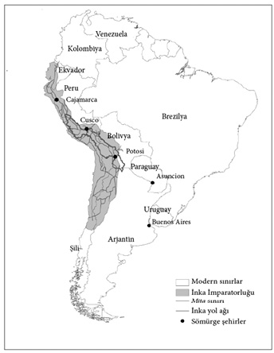
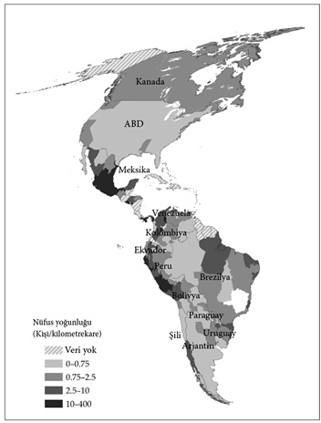

1
Çok yakın, yine de çok farklı
Rio Grande iktisadı
Nogales kenti bir çitle ikiye ayrılır. Yanında durur ve kuzeye bakarsanız Santa Cruz County’deki Nogales Arizona’yı görürsünüz. Hane başına ortalama gelir yıllık yaklaşık 30 bin dolar kadardır. Gençlerin çoğu okula gider ve yetişkinlerin büyük çoğunluğu lise mezunudur. ABD’nin sağlık sisteminin kusurlarına ilişkin tüm o tartışmalara rağmen nispeten sağlıklı bir nüfusa ve dünya standartlarına göre uzun bir yaşam süresi ortalamasına sahiptir. Sakinlerinin çoğu 65 yaşın üstündedir ve devletin yaşlılar için düzenlediği sağlık sigortasından yararlanmaktadır. Bu, devletin sağladığı, elektrik, telefon, kanalizasyon sistemi, halk sağlığı, onları diğer kentlere bağlayan yol ağı ve elbette yasa ve düzen gibi çoğu insanın hak olarak gördüğü hizmetlerden yalnızca biridir. Nogales Arizona halkı can ve mal güvenliği için endişe etmeden gündelik işleriyle meşgul olabilir ve hırsızlık, gasp ya da iş yatırımlarını ve evlerini tehlikeye sokabilecek başka tehditlerle sıkça karşılaşmaz. Dahası, Nogales Arizona sakinleri her türlü yetersizliğine ve ara sıra meydana gelen yolsuzluklarına rağmen, hükümetin onların hizmetinde olduğunu bilir. Belediye başkanlarını, kongre üyelerini ve senatörlerini değiştirmek için oy kullanabilirler; ülkelerini kimin idare edeceğini belirleyen başkanlık seçimleri için sandığa gidebilirler. Demokrasi onların doğasında vardır.
Çitin Güney tarafında, yalnızca birkaç adım uzakta, hayat epey farklıdır. Nogales Sonora sakinleri Meksika’nın nispeten müreffeh bir kesiminde yaşasalar da, hane başına ortalama gelir Nogales Arizona’dakinin yaklaşık üçte biri düzeyindedir. Nogales Sonora’da yetişkinlerin çoğunun lise diploması yoktur ve gençlerin çoğu okula gitmez. Anneler bebek ölümlerindeki yüksek oran nedeniyle endişe içindedir. Halk sağlığı koşullarının yetersizliği, bebeklerin bir yaşının üstüne çıkacak kadar yaşasalar dahi sağlık koşullarının iyi olmadığı anlamına gelir. Nogales Sonora sakinlerinin kuzeydeki komşuları kadar uzun yaşamamaları şaşırtıcı değildir. Ayrıca, çoğu sosyal tesisten yoksundurlar. Çitin güney yanında yollar kötü durumdadır. Yasa ve düzen ise daha da kötüdür. Suç oranı yüksektir ve bir iş kurmak riskli bir girişimdir. Bir tek soygun riski değildir söz konusu olan; daha faaliyete başlayabilmek için bile tüm o izinlerin alınıp gerekli yerlere rüşvet verilmesi gerekir ki, bu da pek kolay bir iş değildir. Nogales Sonora sakinleri, siyasetçilerin yolsuzluk ve beceriksizlikleriyle her gün yüz yüzedirler. Kuzeydeki komşularının aksine, demokrasi onlar için oldukça yeni bir deneyimdir. 2000 yılındaki siyasi reforma dek Meksika’nın büyük çoğunluğu gibi Nogales Sonora da yozlaşmış Kurumsal Devrimci Parti’nin ya da Partido Revolucionario Institucional’in (PRI) idaresi altındaydı. Bu yüzden, aralarında Nogales Sonora sakinlerinin de olduğu pek çok Meksikalının sıkı koruma altındaki Birleşik Devletler-Meksika sınırını geçmek için hayatlarını tehlikeye atmaları şaşırtıcı değil.
Bir kentin iki yarısı nasıl birbirinden bu denli farklı olabilir? Coğrafi ya da iklimsel bir farklılık söz konusu değildir. Ayrıca mikroplar Birleşik Devletler ve Meksika arasında gidip gelirken herhangi bir kısıtlamayla karşılaşmadıklarından bölgedeki hastalık türleri de farklılık göstermez. Elbette sağlık koşulları gayet farklıdır ama bunun hastalıklarla bir ilgisi yoktur; bunun nedeni sınırın güney tarafında halkın sağlık açısından daha elverişsiz şartlarda yaşaması ve yeterli sağlık hizmetlerinden mahrum olmalarıdır.
Ama belki de yerleşimciler farklıdır. Acaba Nogales Arizona sakinleri Avrupalı göçmenlerin, güneydekiler de Azteklerin torunları olabilirler mi? Hayır. Sınırın iki yanındaki insanların geçmişleri oldukça benzerdir. 1821’de Meksika’nın İspanya’dan bağımsızlığını kazanmasının ardından “Los dos Nogales”in etrafındaki bölge Meksika devleti Vieja California’nın bir parçası oldu ve 1848’deki Meksika-Amerika Savaşı’ndan sonra bile öyle kaldı. Gerçekte Birleşik Devletler sınırı ancak 1853’teki Gadsden Alımı’ndan1 sonra bu bölgenin içine doğru genişledi. Sınırı incelerken “küçük şirin Los Nogales Vadisi”nin varlığından bahseden Teğmen N. Michler’di. Burada, sınırın her iki tarafında, iki kent yükseldi. Nogales Arizona ve Nogales Sonora sakinlerinin ataları aynı; aynı yemeklerden ve aynı müzikten keyif alıyorlar ve aynı “kültüre” sahip olduklarını söyleme cesaretini de gösterebiliriz.
Tabii, Nogales’in iki yarısı arasındaki farklılıkların büyük olasılıkla çoktan tahmin ettiğiniz basit ve apaçık bir açıklaması var: Kenti ikiye ayıran sınırın kendisi. Nogales Arizona, Birleşik Devletler’dedir. Sakinleri Birleşik Devletler’in ekonomik kurumlarından yararlanırlar ve bu kurumlar onların mesleklerini özgürce seçebilmelerini, eğitim görüp becerilerini geliştirebilmelerini sağladığı gibi, işverenlerini de en gelişkin teknolojilere yatırım yapmaya teşvik eder ve bu da onlara daha yüksek ücretler ödenmesine yol açar. Ayrıca demokrasinin işleyişinde pay sahibi olmalarına, temsilcilerini seçmelerine ve tasvip etmedikleri işler yaptıklarında onları değiştirmelerine olanak tanıyan siyasal kurumları vardır. Bunun sonucunda siyasetçiler yurttaşların talep ettiği temel hizmetleri (kamu sağlığından, yol hizmetlerine, yasa ve düzene kadar) karşılarlar. Nogales Sonora’dakiler ise bu kadar şanslı değildirler. Farklı kurumların şekillendirdiği farklı bir dünyada yaşarlar. Bu farklı kurumlar iki Nogales’in sakinleri, oraya yatırım yapmaya istekli girişimciler ve kurumlar için tamamen farklı teşvikler yaratır. Nogales’lerin farklı kurumlarının yarattığı bu teşvikler ve hangi ülkeye bağlı oldukları, sınırın iki tarafındaki ekonomik refah düzeylerinde görülen farklılıkların temel nedenini oluşturur.
Neden Birleşik Devletler’in kurumları ekonomik başarıya Meksika’nınkilerden ya da benzer biçimde Latin Amerika’nın diğer ülkelerinden çok daha elverişlidir? Bu sorunun yanıtı erken sömürgecilik döneminde farklı toplumların oluşma biçimlerinde yatar. O tarihte meydana gelen kurumsal bir farklılaşmanın etkileri günümüze kadar varlığını korudu. Bu farklılaşmayı anlamak için işe tam olarak Kuzey ve Latin Amerika’daki sömürgelerin kuruluşundan başlamamız gerekir.
Buenos Aires’in kuruluşu
1516’nın başlarında İspanyol denizci Juan Díaz de Solís, Güney Amerika’nın doğu sahillerindeki geniş bir halice demir attı. Solís sahilin sığ sularında ilerlerken bu toprakları İspanya adına sahiplendi ve bölgede gümüş olduğu için nehrin adını Río de la Plata, “Gümüş Nehri” koydu. Halicin iki yanındaki yerli halklar –günümüzde Uruguay’ın bulunduğu bölgedeki Charrúa halkı ve modern Arjantin’in Pampas olarak bilinen ovalarındaki Querandí halkı– yeni gelenleri düşmanca karşıladı. Bu yerliler, güçlü bir merkezi siyasi otorite olmaksızın küçük gruplar halinde yaşayan avcı-toplayıcılardı. Aslına bakılırsa, İspanya adına işgal etmeye koyulduğu yeni topraklarını keşfe çıkan Solís’i sopalarla döverek öldürenler de Charrúalardan bir gruptu.
1534’te, hâlâ iyimserliğini koruyan İspanyollar Pedro de Mendoza önderliğindeki yerleşimcilerden oluşan ilk misyonu İspanya’dan bölgeye gönderdiler. Bu yerleşimciler aynı yıl içinde Buenos Aires bölgesinde bir şehir inşa ettiler. Buranın Avrupalılar için ideal bir yer olması gerekiyordu. Adı tam olarak “iyi havalar” anlamına gelen Buenos Aires’in yumuşak, ılıman bir iklimi vardı. Ne var ki, İspanyolların ilk yerleşimi kısa ömürlü oldu. İyi havaların değil, sömürecekleri kaynakların ve zorla kullanacakları işgücünün peşindeydiler. Üstelik Charrúas ve Querandí ahalisi de onlara minnettar değildi. İspanyollara yiyecek temin etmeye yanaşmadılar ve yakalandıklarında çalışmayı reddettiler. Okları ve yaylarıyla yeni yerleşimlere saldırdılar. Kendi başlarına yiyecek bulmak zorunda kalacaklarını tahmin etmeyen İspanyollar açlık çekmeye başladı. Buenos Aires düşledikleri gibi değildi. Bölgenin yerlilerini çalışmaya zorlamak fayda etmiyordu. Bölgede sömürülecek altın ya da gümüş yoktu. Solís’in bulduğu gümüşler ise aslında uzak Batı’dan, ta And Dağları’ndaki İnka ülkesinden gelmişti.
Hayatta kalmaya çalışan İspanyollar, daha büyük zenginlikler ve daha kolay çalıştırılabilecek bir nüfus sunacak yeni bir yer bulmak için keşif seferlerine çıkmaya başladılar. 1537’de Juan de Ayolas’ın liderlik ettiği böyle bir seferde, onları İnkalara götürecek bir yol arayarak Paraná Nehri’nden yukarı doğru ilerlediler. Yolculukları esnasında, mısır ve manyoka dayalı bir tarım ekonomisine sahip yerleşik hayata geçmiş bir halk olan Guaranílerle karşılaştılar. De Ayolas, Guaranílerin Charrúa ve Querandílerden tamamen farklı bir tabiatta olduklarını fark etmekte gecikmedi. Kısa süren bir çatışmanın ardından Guaraní direnişini kırdı ve Nuestra Señora de Santa María de la Asunción adında, bugün Paraguay’ın başkenti olan bir şehir kurdu. Guaraní prensesleriyle evlenen De Ayolas ve adamları kısa sürede yeni bir aristokratik sınıf haline geldiler. Mevcut Guaraní zorunlu işgücü ve vergi sistemini, kendi denetimlerine almak kaydıyla devam ettirdiler. Bu, kurmayı istedikleri türden bir sömürgeydi. Dört yıl içinde Buenos Aires terk edildi ve oraya yerleşen İspanyolların hepsi yeni şehre taşındı.
Pampas’ın büyük tarımsal zenginliğine dayalı Avrupa tarzı geniş bulvarlarıyla “Güney Amerika’nın Paris’i” Buenos Aires’te 1580’e kadar yeni bir yerleşim kurulmadı. Buenos Aires’in terk edilmesi ve Guaraní’nin fethi, Amerika’daki Avrupa sömürgeciliğinin mantığını yansıtır. İlk İspanyol ve –ileride göreceğimiz gibi– İngiliz sömürgecileri toprağı kendi başlarına sürmeye niyetli değildi; bunu onların yerine başkaları yapsın istiyorlardı. Ayrıca talan edebilecekleri zenginlikler, altın ve gümüş istiyorlardı.
Cajamarca’dan...
De Solís, de Mendoza ve de Ayolas’ın keşif seferleri, Kristof Kolomb’un 12 Ekim 1492’de Bahama adalarından birine ulaşmasını izleyen daha ünlü keşif seferlerinin ardından geldiler. Amerika’daki İspanyol yayılmacılığı ve sömürgeciliği 1519’da Hernán Cortés’in Meksika’yı işgal etmesinin, 15 yıl sonra Francisco Pizarro’nun Peru seferinin, bundan sadece iki yıl sonra da Pedro de Mendoza’nın Río de la Plata seyahatinin ardından ciddi bir hal aldı. Sonraki yüzyıl boyunca İspanyollar Güney Amerika’nın orta, batı ve güney kesimlerinin büyük kısmını fethedip sömürgeleştirirken Portekiz de doğuda Brezilya’yı sahiplendi.
İspanyolların sömürgecilik stratejisi son derece etkiliydi. İlk kez Cortés tarafından Meksika’da geliştirilen bu strateji, direnişi kontrol altına almanın en etkili yolunun yerlilerin liderini ele geçirmek olduğu gözlemine dayanıyordu. Bu strateji sayesinde İspanyollar liderin serveti üzerinde hak iddia edip yerli halkı vergi ve yiyecek vermeye zorladılar. İkinci aşama kendilerini toplumun yeni elit sınıfı haline getirerek vergi, savaş tazminatı ve özellikle de zorunlu işgücü gibi mevcut uygulamaların kontrolünü ele geçirmeleriydi.
Cortés ve adamları 8 Kasım 1519’da muazzam Aztek başkenti Tenochtitlán’a vardıklarında Aztek İmparatoru Montezuma, İspanyolları barışçıl bir biçimde karşılamasını tavsiye eden danışmanlarının sözüne uyarak misafirperverlik gösterdi. Sonrasında olanlar, Fransisken rahip Bernardino de Sahagún’un ünlü Florentine Kodeksi’ndeki 1560’larda derlediği maddede detaylı bir biçimde tarif edilmiştir.
[İspanyollar] derhal Montezuma’yı kıskıvrak yakaladılar (...) ardından tüm silahlar ateşlendi (...) Ortalığı korku sardı. Sanki herkesin kalbi yerinden çıkmıştı. Daha karanlık çökmeden dehşet çökmüştü, şaşkınlık ve endişe hakimdi, herkes donakalmıştı.
Ve şafak söktüğünde derhal [İspanyolların] talep ettiği şeyler ilan edildi; beyaz tortillalar, kızartılmış hindiler, yumurtalar, tatlı su, kereste, odun, odun kömürü (...) Ve doğrusu, bunlar Montezuma kumandasında oluyordu.
Ve İspanyollar iyice yerleştiklerinde, kentin bütün hazinelerini ele geçirmek için derhal Montezuma’yı sorguya çektiler (...) büyük bir şevkle altın aradılar. Ve bunun üzerine Montezuma onlara yolu gösterdi. Etrafını sarmışlardı (...) sıkı sıkı tutuyor, bırakmıyorlardı.
Ve ambara vardıklarında, Teocalco adındaki yere, tüm o şaşaalı şeyleri ortaya döktüler: Parlak kuş tüylerinden yelpazeler, gereçler, kalkanlar (...) buruna takılan hilal şeklindeki altın takılar, bacağa takılan altın bilezikler, altın pazıbentler, altın taçlar.
Ardından altını ayırdılar (...) Derhal bir ateş yakıp (...) tüm değerli şeyleri ateşe verdiler. Hepsi yandı. Ve İspanyollar tüm altını külçeler haline getirdiler (...) Ve İspanyollar her yeri gezdiler (...) Her şeyi aldılar; görüp beğendikleri her şeyi.
Bunun ardından Montezuma’nın kendi ambarına gittiler (...) Totocalo denilen yere (...) orada [Montezuma’nın] kendi mallarını getirdiler (...) hepsi değerli şeylerdi; ucu süslü kolyeler, kuştüyü perçemli kol bantları, altın pazıbentler, bilezikler, deniz kabuklarıyla yapılmış pazıbentler (...) ve turkuvaz taç, hükümdarlığın simgesi. Hepsini aldılar.
Azteklerin askeri fethi 1521’de tamamlandı. Cortés, Yeni İspanya eyaletinin valisi olarak en değerli kaynağı, yani yerli nüfusu, encomienda kurumuna göre bölmeye başladı. Encomienda ilk kez İspanya’da, ülkenin güneyini 8. yüzyıl ve sonrasında buraya yerleşen Mağribilerden geri alma faaliyetinin bir parçası olarak ortaya çıktı. Yeni Dünya’da çok daha kötücül bir biçim aldı: Yerliler encomendero denilen bir İspanyol’a veriliyordu. Yerli halk encomendero’ya vergi vermeye ve onun için çalışmaya zorlanıyor bunun karşılığında encomendero da onlara Hristiyanlığı kabul ettirmekle yükümlü sayılıyordu.
Encomienda uygulamalarının erken dönemine ait canlı bir tarif, bize İspanyol sömürge sisteminin en eski ve en yıkıcı eleştirilerini formüle eden Dominiken rahibi Bartolomé de las Casas’dan kalmıştır. De las Casas, yeni vali Nicolás de Ovando liderliğindeki bir filoyla 1502’de İspanyol adası Hispaniola’ya geldi. Her gün yerli halkın maruz kaldığı zalimane muameleye ve sömürüye şahit olması, hayal kırıklığının ve rahatsızlığının giderek artmasına yol açtı. 1513’te, Küba’nın İspanyollar tarafından fethinde bir din görevlisi olarak görev aldı; hatta hizmetleri için ona bir encomienda bile verildi. Çabaları 1542’de İspanyol idaresinin barbarlığına karşı acımasız bir saldırı olan Yerlilerin İmhası Üzerine Kısa Bir İnceleme adlı kitabının yayınlanmasıyla sonuçlandı. Encomienda konusunda, Nikaragua örneği için şunları söylüyordu:
Yerleşimcilerin her biri şehirde kendisine tahsis edilen (ya da hukuki ifadesiyle encommende edilen) konuta yerleşti. Mukimleri kendisi için çalıştırmaya başladı, zaten az olan gıda maddelerini ellerinden aldı ve yerli halka ait, onların işlediği ve eskiden beri kendi ürünlerini yetiştirdikleri toprağı sahiplendi. Yerleşimciler tüm yerli nüfusu –ileri gelenleri, yaşlı adamları, kadınları ve çocukları– kendi hane halkından sayarak öyle muamele ettiler ve böylelikle hiç rahat yüzü göstermeden gece gündüz kendi çıkarları için çalıştırdılar.
De las Casas, bugünün Kolombiya’sı Yeni Granada’nın fethinde uygulanan stratejiyi şöyle aktarıyordu:
İspanyollar, mevcut altının tamamına el koymaya yönelik uzun vadeli planlarını gerçekleştirebilmek için şehirleri ve yaşayanlarını kendi aralarında paylaşmak (ya da kendi tabirleriyle encommende etmek) şeklindeki olağan stratejilerini uyguladılar (...) ve sonra, her zaman olduğu gibi, onlara sıradan birer köle gibi davrandılar. Sefere komuta eden adam, bölgenin kralını ele geçirip altı ya da yedi ay boyunca tutsak etti ve oldukça hukuksuz bir şekilde gitgide daha fazla altın ve zümrüt talep etti. Dehşete düşen kral Bogotá, kendisini işkencecilerinin pençelerinden kurtarmanın endişesiyle bir evi tamamen altınla doldurup teslim etmesi talebine rıza gösterdi. Bunu yerine getirmek için de halkını altın aramaya gönderdi ve onlar da pek çok kıymetli taşı parça parça taşımaya başladılar. Ama ev hâlâ dolmamıştı ve bunun üzerine İspanyollar sözünü tutmadığı için onu öldüreceklerini duyurdular. Komutan bir kanun temsilcisi olarak davanın kendisine bırakılması gerektiğini savundu. İsteği yerine getirildiğindeyse, resmi suçlamaların tamamlanmasının ardından kralı anlaşmayı yerine getirmeme konusunda ısrar ettiği gerekçesiyle işkenceye mahkûm etti. Ona strapaddoyla2 işkence ettiler, karnına yanan içyağı koydular, her iki ayağını ve başını demir kasnaklarla kazıklara sabitlediler ve sonra iki adam ellerini tutarken ayak tabanlarını yaktılar. Komutan ara sıra gelip bakıyor ve daha fazla altın vermedikçe ona ağır ağır işkence etmeye devam edeceklerini tekrarlıyordu ve öyle de yaptılar. Sonunda Kral ona çektirdikleri ıstıraba dayanamayıp boyun eğdi.
Meksika’da geliştirilen fetih stratejisi ve kurumları İspanyol İmparatorluğu’nun her yerinde şevkle benimsendi. Ama başka hiçbir yerde Pizarro’nun Peru’yu fethindeki kadar etkili bir biçimde uygulanmadı. De las Casas’ın ifadesiyle,
1531’de bir başka büyük zalim birkaç adamıyla Peru krallığına seyahat etti. Maceracı emsallerinin taktik ve stratejilerini Yeni Dünya’nın başka yerlerinde taklit etmek için her türlü gayreti göstermeye koyuldu.
Pizarro, Peru şehri Tumbes yakınlarındaki sahilden başlayıp güneye ilerledi. 15 Kasım 1532’de İnka İmparatoru Atahualpa’nın ordugâh kurduğu dağ şehri Cajamarca’ya ulaştı. Ertesi gün, müteveffa babaları Huayna Capac’ın yerine kimin geçeceğini tayin etmek için düzenlenen müsabakada kardeşi Huascar’ı bozguna uğratan Atahualpa, maiyetiyle birlikte İspanyolların kamp yerine geldi. Atahualpa öfkeliydi, çünkü o ana kadarki İspanyol mezaliminden, örneğin Güneş Tanrısı İnti’nin tapınaklarından birinde yapılanlardan haberdardı. Daha sonra olanlar ise herkesçe malumdur. Tuzak kurup gelenleri gafil avladılar. Atahualpa’nın muhafızlarından ve maiyetindekilerinden oluşan muhtemelen iki bin kadar kişiyi öldürdüler ve kralı esir aldılar. Atahualpa yeniden özgürlüğüne kavuşmak için bir oda dolusu altın ve iki oda dolusu gümüş getireceğine söz vermek zorunda kaldı. Sözünü yerine getirdi ama sözlerinde durmayan İspanyollar Ağustos 1533’te onu boğarak öldürdüler. O Kasım, İspanyollar İnka başkenti Cusco’yu ele geçirdi. İnka aristokrasisi de Atahualpa’yla aynı muameleye tabi tutuldu; altın ve gümüş temin edinceye dek hapsedildiler. İspanyolların taleplerini karşılamadıklarında diri diri yakıldılar. Güneş Tapınağı gibi Cusco’nun muhteşem sanat hazinelerindeki altınlar yerlerinden kazınıp eritilerek külçe haline getirildi.
Bu noktada İspanyollar İnka halkına odaklandılar. Meksika’da olduğu gibi, buranın sakinleri de herbiri Pizarro’nun beraberindeki conquistadorlar’dan birinin sorumluluğuna verilen encomiendalar’a bölündü. Encomiendalar sömürgeciliğin ilk döneminde emeğin kontrol edilip örgütlenmesinde kullanılan temel kurumdu. Ancak kısa bir süre sonra kuvvetli bir rakiple karşılaştı. 1545’te, Diago Gualpa adındaki bir yerli günümüz Bolivya’sında Andların yüksek kesimlerindeki yerel bir tapınağı ararken ani bir rüzgârla yere devrildi ve tam önünde gizli bir gümüş cevheri belirdi. Bu, İspanyolların El Cerro Rico, “Zengin Tepe” adını koydukları büyük gümüş dağının bir parçasıydı. Etrafında büyüyen Potosí şehri 1650’de 160 bin kişilik bir nüfusa sahipti ve aynı dönemde Lizbon ya da Venedik’ten daha büyüktü.

Harita 1: İnka İmparatorluğu, İnka yol ağı ve mita madencilik havzası.
İspanyolların gümüşten yararlanabilmek için madenciye, hem de çok sayıda madenciye ihtiyaçları vardı. Bu yüzden yeni bir genel vali olarak asıl görevi işgücü meselesine çözüm getirmek olan Francisco de Toledo’yu atadılar. De Toledo Peru’ya 1569’da geldi ve ilk beş yılını etrafı gezip yeni görevini inceleyerek geçirdi. Ayrıca tüm yetişkin nüfusu kapsayan büyük çapta bir araştırma başlattı. Toledo ihtiyacı olan yerli işgücünü bulmak için öncelikle tüm nüfusu taşıyarak reduccioneler olarak bilinen –tam anlamıyla “küçültülenler”– yeni şehirlerde yoğunlaştırdı. Böylelikle işgücü İspanya Kraliyeti tarafından daha kolay sömürülebilecekti. Ardından mita olarak bilinen ve İnka dili Quechua’da “sıra” anlamına gelen bir İnka işgücü kurumunu diriltip uyarladı. İnkalar mita sistemleri sayesinde tapınaklar, aristokrasi ve ordu için yiyecek sağlamak üzere tasarlanmış plantasyonları işletirken zorunlu işgücünü kullanıyorlardı. İnka eliti de karşılığında kıtlıkla mücadele ediyor ve güvenlik sağlıyordu. Toledo’nun elinde mita, özellikle de Potosí mitası, İspanyol sömürgeciliğinin emek sömürüsündeki en geniş ve en eziyetli planına dönüşecekti. De Toledo modern Peru’nun ortasından başlayarak modern Bolivya’nın büyük kısmını kapsayan dev bir havza belirledi. Yaklaşık 200 bin mil kareyi kaplıyordu. Bu bölgedeki reduccione’lerine yeni gelen yerli erkeklerin yedide birinin Potosí’deki madenlerde çalışması gerekiyordu. Potosí mita’sı neredeyse tüm sömürgecilik dönemi boyunca sürdü ve ancak 1825’te yürürlükten kaldırıldı. Harita 1, İspanyol fethi dönemindeki İnka İmparatorluğu’nun kaplamını ve mita havzasını gösteriyor. Mita’nın başkent Cusco’yu da kapsayarak imparatorluğun merkez kısmında karşılık geldiği bölgedir bu.
Ne ilginçtir ki, bugün Peru’da hâlâ mita’nın mirasını görürsünüz. Calya ve hemen yanındaki Acomayo’yu ele alalım. Bu bölgeler arasında çok az fark var gibi görünür. İkisi de dağların yüksek kesimlerinde bulunur ve ikisinin halkı da İnkaların soyundan gelip Quechua dili konuşur. Yine de, Calca’dakilerden üçte bir oranında daha az tüketim gücüne sahip sakinleriyle Acomayo çok daha yoksuldur. İnsanlar bunu bilir. Acomayo’da gözü pek yabancılara sorarlar: “Buradaki insanların Urubamba ve Calca’dakilerden daha yoksul olduğunu bilmiyor musunuz? Ne diye buraya gelmek istersiniz ki?”
İnka İmparatorluğu’nun eski merkezi ve başkenti Cusco’dan Acomayo’ya gelmek, Calca’ya gelmekten çok daha zordur. Calca yolu fena değildir, Acomayo’nunki ise bakımsızlıktan harap durumdadır. Acomayo’ya ulaşmak için bir at ya da katır bulmanız gerekir. Her iki şehirde de insanlar aynı ekinleri yetiştirirler ancak Calca’dakiler bunları pazarda para karşılığında satarlar. Acomayo’dakiler ise kendi ihtiyaçlarını karşılamak için yetiştirirler. Yöre sakinlerinin aşina olduğu bu gözle görünür eşitsizlikler iki bölge arasındaki kurumsal farklılıklar bakımından anlaşılabilir. Bu kurumsal farklılıkların tarihsel kökleri Toledo’ya ve onun yerli işgücünü daha etkin kullanmaya yönelik planına kadar uzanır. Acomayo ve Calca arasındaki en büyük tarihsel fark ise Acomayo’nun Potosí mita’sının havzasında olmasıydı. Calca öyle değildi.
De Toledo, emeğin yoğunlaştırılmasına ve mita’ya ek olarak encomienda’yı bir “kelle vergisi”yle, her yetişkin erkeğin yıllık olarak gümüşle ödemesi gereken sabit bir tutarla pekiştirdi. Bu, yerlileri emek piyasasına zorlamak ve İspanyol toprak sahiplerinin ücretlerini azaltmak için tasarlanan bir başka dalavereydi. Toledo’nun görev süresi boyunca bir başka kurum, repartimiento de mercancias, yaygınlık kazandı. İspanyolca “repartir”, yani “dağıtmak” fiilinden gelen ve tam olarak “malların dağıtımı” anlamına gelen bu repartimiento, malların İspanyollar tarafından belirlenen fiyatlarla yerlilere zorla satışını içeriyordu. De Toledo son olarak İspanyol elitinin iş girişimlerinde, şarap, koka yaprakları ya da tekstil ürünleri gibi mallardan oluşan ağır yükleri taşımak için yük hayvanları yerine yerlilerin kullanıldığı trajin, yani kelime anlamıyla “yük”ü, uygulamaya koydu.
Amerika’daki İspanyol sömürge dünyasının her tarafında benzer kurumlar ve sosyal yapılar ortaya çıktı. İspanyollar yağmacılığa, altın ve gümüş ihtirasına dayanan bir başlangıç evresinin ardından yerli halkı sömürmek için bir kurumlar ağı meydana getirdiler. Encomienda, mita, repartimiento ve trajin’den oluşan kurumlar dizisi, yerli halkın yaşam standartlarını geçimlik düzeye indirmeye zorlamak ve böylece arta kalan tüm kazancı İspanyollar için sömürmek üzere tasarlanmıştı. Bu amaca, topraklarını kamulaştırılarak, çalışmaya zorlayarak, hizmetleri için düşük ücretler vererek, yüksek vergiler getirerek ve almayı bile istemedikleri mallara yüksek fiyatlar koyarak ulaştılar. Bu, kurumların İspanya Krallığı’na büyük servetler kazandırmasına, fatihleri ve torunlarını büyük zenginliğe kavuşturmasına karşın Latin Amerika’yı dünyanın en eşitsiz kıtası haline getirdi ve ekonomik potansiyelinin çoğunu tüketti.
Jamestown’a...
İspanyollar 1490’larda Amerika’nın fethine başladıklarında İngiltere yıkıcı bir iç savaşın, Gül Savaşları’nın ardından toparlanmaya çalışan küçük bir Avrupa gücüydü. Yağma ve altın için kapışacak ve Amerika’nın yerli halklarını sömürme fırsatından yararlanacak durumda değildi. Yaklaşık 100 yıl sonra, 1588’de, İspanyol Armadası’nın, İspanya Kralı II. Felipe’nin İngiltere’yi işgal girişiminin ve şans eseri bozgununun siyasal şok dalgaları tüm Avrupa’ya yayıldı. İngiltere’nin zaferi büyük bir sürpriz olsa da, sonunda sömürge imparatorluğu macerasına katılmalarına olanak tanıyan denizlerdeki artan İngiliz girişkenliğinin de bir işaretiydi.
Bu yüzden, İngilizlerin Kuzey Amerika’yı kolonileştirmeye tam olarak aynı dönemde başlamaları rastlantı değildir. Ama geç kalmışlardı. Kuzey Amerika’yı cazip olduğu için değil sadece uygun olduğu için seçtiler. Amerika’nın sömürülecek yerli halkın bol olduğu ve gümüş madenlerinin yer aldığı “arzu edilir” kısımları çoktan işgal edilmişti. İngilizlere artıklar kalmıştı. 18. yüzyılda İngiliz yazar ve ziraatçı Arthur Young kârlı “temel ihtiyaç mallarının” –bununla ihraç edilebilir tarım ürünlerini kastediyordu– nerede üretilebileceğini ele alırken şöyle yazıyordu:
Her şey dikkate alındığında görüyoruz ki, kolonilerimizdeki temel ihtiyaç malları üretimi, güneşten uzaklıkları oranında değer kaybediyor. Hepsinin en sıcağı olan Karayiplerde miktar kişi başına 8l. 12s. 1d. iken kıtanın güneyindeki kolonilerde 5l. 10s. merkezdekilerde 9s. 6 1/2d.’e düşüyor. Kuzeydeki yerleşimlerde ise 2s. 6d.’e. Bu ölçek kuşkusuz çok önemli bir dersi ortaya koyuyor: Kuzey enlemlerinde koloni kurmaktan kaçınılması gerektiğini.
İngilizlerin 1585 ile 1587 yılları arasında Kuzey Carolina’daki Ranoke’de bir koloni kurma girişimleri tam bir başarısızlıktı. 1607’de bir kez daha denediler. 1606’nın sonlarına doğru üç yelkenli; Susan Constant, Godspeed ve Discovery Kaptan Christopher Newport komutasında Virginia’ya gitmek üzere yelken açtı. Virginia Kumpanyası’nın himayesindeki koloniciler Chesapeake Körfezi’ne girdiler ve tahttaki İngiliz Kralı I. James’e atfen James adını verdikleri nehir boyunca ilerlediler. 14 Mayıs 1607’de Jamestown yerleşimini kurdular.
Virginia Kumpanyası’nın gemilerindeki yerleşimciler İngiliz olsa da, ellerindeki kolonicilik modeli Cortés, Pizarro ve Toledo’nun hazırladığı şablondan büyük ölçüde etkilenmişti. İlk planları, bölgenin yerli şefini ele geçirmek ve onu erzak bulmanın ve yerlileri kendileri için yiyecek ve zenginlik sağlamaya zorlamanın bir yolu olarak kullanmaktı.
İngiliz kolonicileri Jamestown’a ilk kez ayak bastıklarında bulundukları bölgenin Wahunsunacock adındaki bir krala sadakatle bağlı yaklaşık 30 Kızılderili kabilesinin oluşturduğu bir koalisyon olan Powhatan Konfederasyonu’na ait olduğunu bilmiyorlardı. Wahunsunacock’un başkenti, Jamestown’a yalnızca 20 mil uzaklıktaki Werowocomoco şehriydi. Koloniciler bölgedeki durum hakkında daha fazla bilgi edinmek istiyorlardı. Eğer Kızılderililer yiyecek ve işgücü sağlamaya ikna edilemezlerse koloniciler en azından onlarla ticaret yapabilmeliydi. Görünüşe göre, yerleşimcilerin kendi başlarına çalışıp kendi ürünlerini yetiştirmesi fikri akıllarından dahi geçmemişti. Ne de olsa, Yeni Dünya’nın fatihleri de böyle yapmamıştı.
Wahunsunacock, kolonicilerin varlığını çabucak fark etti ve onlara büyük bir kuşkuyla yaklaştı. Kuzey Amerika için oldukça büyük sayılabilecek bir imparatorluğun başındaydı. Ancak çok düşmanı vardı ve İnkalar’da olduğu gibi ezici bir merkezi siyasal kontrolden yoksundu. Wahunsunacock İngilizlerin niyetinin ne olduğunu anlamaya karar verdi ve ilk olarak onlarla dostça ilişkiler kurmayı istediğini ileten elçiler gönderdi.
1607 kışı başlarken Jamestown yerleşimcilerinin yiyeceği azalmaya başlamıştı. Koloni konseyinin liderliğine tayin edilen Edward Marie Wingfield kararsızlık içindeydi. Durumu kurtaran Kaptan John Smith oldu. Yazdıkları, koloninin başlangıç dönemindeki gelişimine ilişkin bilgilerimizin temel kaynaklarından birini oluşturan Smith destansı bir karakterdi. İngiltere’nin Lincolnshire kırsalında doğdu. Ticarete atılmasını arzu eden babasına aldırış etmedi ve paralı asker oldu. İlkin Hollanda’da İngiliz ordusunda savaştı. Ardından Macaristan’daki Avusturya ordusuna katılarak Osmanlı İmparatorluğu ordularına karşı savaştı. Romanya’da yakalandı, köle diye satıldı ve tarla işçisi olarak çalıştırıldı. Günün birinde efendisinin üstesinden gelmeyi başardı ve elbiseleri ile atını çalarak Avusturya’ya kaçtı. Smith, Virginia yolculuğunda başını çoktan derde sokmuş ve Wingfield’ın emirlerine karşı geldiği için isyan suçuyla Susan Constant’da hapsedilmişti. Planları, Yeni Dünya’ya vardıklarında onu mahkemeye çıkarmaktı. Ancak Wingfield, Newport ve diğer kolonici elitin saçtığı dehşete rağmen, kendilerine verilen emirlerin bulunduğu mühürlü zarfı açtıklarında Virginia Kumpanyası’nın Smith’i Jamestown’u yönetecek idari konseyin üyeliğine tayin ettiklerini gördüler.
Newport erzak ve daha fazla kolonici tedarik etmek için İngiltere’ye dönüp, Wingfield ne yapılacağı konusunda karasızlığa düştüğünde koloniyi kurtaran Smith’di. Temel gıda maddeleri sağlayan bir dizi ticari misyon başlattı. Bunlardan birinde Wahunsunacock’un küçük kardeşlerinden biri olan Opechancanough tarafından ele geçirildi ve Werowocomoco’da kralın huzuruna çıkarıldı. Wahunsunacock’la görüşen ilk İngiliz’di ve bazı kaynaklara göre Smith bu ilk görüşmede Wahunsunacock’un genç kızı Pocahontas’ın araya girmesiyle hayatta kalmıştı. 2 Ocak 1608’de serbest bırakıldı ve aynı günün ilerleyen saatlerinde İngiltere’den tam zamanında dönen Newport’un gelişine kadar hâlâ tehlikeli ölçüde yiyecek kıtlığı çekmekte olan Jamestown’a döndü.
Jamestownlu koloniciler bu ilk deneyimlerinden çok az ders çıkardılar. 1608 yılının devamında altın ve değerli maden arayışlarını sürdürdüler. Hayatta kalmak istiyorlarsa ister zorla ister ticaret yoluyla olsun Kızılderililer sayesinde karınlarını doyurmaya bel bağlayamayacaklarını hâlâ anlayabilmiş gibi görünmüyorlardı. Cortés ve Pizarro için iyi sonuç veren sömürgecilik modelinin Kuzey Amerika’da hiç mi hiç işe yaramayacağını ilk fark eden Smith’di. Temel koşullar tamamen farklıydı. Smith, İnkaların ve Azteklerin aksine Virginia Kızılderililerinin altını olmadığını belirtiyordu. Gerçekten de, günlüğüne “bilmelisiniz ki tüm servetleri kumanyadan ibaret” diye yazmıştı. İlk yerleşimcilerden biri olup ardında kapsamlı bir günlük bırakan Anas Todkill’in şu teşhisi, Smith ve diğer birkaçının hayal kırıklığını gayet iyi ifade ediyor: “Ne iş vardı, ne umut, ne de konuşmak; varsa yoksa altın çıkarmak, işlemek, taşımak.”
Harita 2, İspanyol fethi sırasında Amerika’nın farklı bölgelerindeki tahmini nüfus yoğunluğunu gösteriyor. Birleşik Devletler’in nüfus yoğunluğu birkaç bölge dışında mil karede en fazla 0.75 kişi düzeyindeydi. Meksika’nın merkezinin ve Peru Andlarının nüfus yoğunluğu ise mil kareye 400 kişiye, yani 500 kattan fazlasına çıkıyordu.
Newport 1608 Nisanı’nda İngiltere’den ayrılırken “aptal altını” da denilen pirit yüklü bir kargo taşıyordu. Eylülün sonunda Virginia Kumpanyası’nın bölgedeki Kızılderililer üzerinde daha sıkı bir kontrol uygulamasını söyleyen emirleriyle döndü. Niyetleri Şef Wahunsunacock’a taç giydirmek ve bu sayede İngiltere Kralı I. James’in hizmetine girmesini sağlamaktı. Onu Jamestown’a davet ettiler ama kolonicilere karşı hâlâ derin bir şüphe besleyen Wahunsunacock’un özgürlüğünü riske atmaya niyeti yoktu. John Smith, Wahunsunacock’un yanıtını şöyle kaydetmişti: “Kralınız bana armağanlar yolladıysa, ben de bir kralım ve burası benim ülkem (...) Ben değilim onun ayağına gitmesi gereken, babanız bana gelecek (...) kalenize gelmem, böyle bir yemi de yutmam.”
Wahunsunacock “böyle bir yemi” yutmazsa, taç giyme törenini gerçekleştirmek için Newport ve Smith’in Werowocomoco’ya gitmesi gerekecekti. Tüm hadise tam bir fiyaskoyla sonuçlanmış gibi görünüyordu. Wahunsunacock namına tüm bu olup bitenden çıkan tek sonuç, kolonicilerden kurtulma zamanının gelmiş olduğuydu. Ticarete ambargo koydu. Jamestown artık erzak için ticaret yapamayacaktı. Wahunsunacock onları aç bırakarak teslim olmaya zorlayacaktı.
Newport İngiltere’ye gitmek üzere 1608 Aralık ayında bir kez daha yelken açtı. Yanında Smith’in kaleme aldığı ve Virginia Kumpanyası’nın direktörlerinden koloniye karşı yaklaşımlarını değiştirmelerini istirham eden bir mektup götürüyordu. Virginia’nın Meksika ve Peru’daki gibi kısa sürede zengin edecek biçimde sömürülmesine olanak yoktu. Altın ya da değerli madenler yoktu ve Kızılderililer çalışmaya ya da yiyecek getirmeye zorlanamıyorlardı. Smith, ayakta kalmayı başaracak bir kolonide çalışmak zorunda olanların kolonicilerin kendisi olduğunu anladı. Bu yüzden direktörlerden doğru türden insanları göndermelerini istedi: “Yeniden adam yolladığınızda buradaki gibi bin kişi göndereceğinize yalvarırım 30 kadar marangoz, çiftçi, bahçıvan, balıkçı, demirci, duvar ustası, ağaçları ve köklerini temizleyecek yeterli miktarda işçi gönderin.”
Smith daha fazla işe yaramaz kuyumcu ustası istemiyordu. Jamestown bir kez daha sadece onun becerikliliği sayesinde kurtulmuştu. Kızılderili kabilelerini onunla ticaret yapmaları için kandırmayı ve zorlamayı başardı; buna yanaşmadıklarında ne bulabildiyse onu aldı. Yerleşimde Smith tek otoriteydi ve “çalışmayan yiyemez” kuralını koymuştu. Jamestown ikinci kışı da atlattı.
Virginia Kumpanyası’nın para getiren bir girişim olması amaçlanmıştı ama iki feci yılın ardından kârdan eser yoktu. Şirket yöneticileri yeni bir yönetim modeline ihtiyaç duyduklarına karar vererek mevcut meclisin yerine bir vali atadılar. Bu mevkiye atanan ilk kişi Sir Thomas Gates’di. Şirket, Smith’in uyarısının bazı yönlerini dikkate alarak yeni bir şey denemeleri gerektiğini kavramıştı. Bu kavrayışın nedeni “açlık zamanı” diye bilinen 1609-1610 kışındaki olaylardı. Yeni yönetim şeklinin hareket alanı bırakmadığı Smith, 1609 sonbaharında kırgın bir halde İngiltere’ye döndü. Koloniciler onun becerikliliğinden mahrum kalmaları ve Wahunsunacock’un yiyecek tedarikini kısmasıyla perişan oldular. Kış mevsimine giren 500 kişiden yalnızca 60’ı, mart ayı geldiğinde sağ kalabilmişti. Durum öylesine umutsuzdu ki, yamyamlığa başladılar.
Gates ve yardımcısı Sir Thomas Gale’in uygulamaya koyduğu “yeni bir şey”, elbette koloniyi yöneten elit için değil fakat İngiliz yerleşimciler için gaddarlık düzeyindeki bir iş rejimiydi. “İlahi, Ahlaki ve Askeri Yasalar”ı yayan Dale’di. Bunlara şu maddeler de dahildi:
Hiçbir erkek ya da kadın koloniden Kızılderililere kaçamaz, kaçanlar ölüm cezasına çarptırılır.
Kamuya ya da şahsa ait bir bahçeyi ya da bir bağı soyan ya da mısır başağı çalanlar ölüm cezasına çarptırılır.
Hiçbir koloni üyesi kendi çıkarı için bir kaptana, gemiciye, yelkenciye ya da tayfaya bu ülkeye ait hiçbir malı satamaz ya da veremez, uymayanlar ölüm cezasına çarptırılır.

Harita 2: Amerika kıtasının 1500’deki nüfus yoğunluğu.
Eğer Kızılderililer istismar edilemiyorsa, diye düşündü Virginia Kumpanyası, belki koloniciler edilebilirdi. Yeni koloni modeli Virginia Kumpanyası’nı tüm ülkenin sahibi yaptı. Erkekler kışlalara yerleştirildi ve şirketin belirlediği tayınları aldı. İş grupları oluşturuldu ve her biri bir şirket yetkilisinin gözetimine verildi. Bu, idamı ceza için ilk çare olarak gören, sıkıyönetime yakın bir uygulamaydı. Koloninin yeni kurumlarının bir parçası olması bakımından biraz önce değindiğimiz ilk madde dikkate değerdir. Şirket kaçanları ölümle tehdit ediyordu. Yeni iş rejimi söz konusu olduğunda çalışmakla yükümlü koloniciler için Kızılderililerle yaşamak için kaçmak, gitgide daha cazip bir seçenek haline geliyordu. Ayrıca, o dönemde Virginia’da yerlilerin nüfus yoğunluğunun bile düşük olduğu göz önünde bulundurulduğunda, Virginia Kumpanyası’nın kontrol ettiği sınırların ötesine yalnız başına kaçmak da mümkündü. Bu seçenekler karşısında şirketin gücü sınırlıydı. İngiliz yerleşimcileri karın tokluğuna ağır iş yapmaya zorlayamazdı.
Bu kolonicilik modelinin Virginia’da işe yaramayacağını kavramak Virginia Kumpanyası’nın biraz zamanını aldı. Ayrıca “İlahi, Ahlaki ve Askeri Yasalar”ın başarısızlığının kafalarına dank etmesi de...
1618’den itibaren önemli ölçüde yeni bir strateji benimsendi. Kızılderilileri ve yerleşimcileri zorlamak mümkün olmadığı için tek alternatif yerleşimcilere teşvik sunmaktı. 1618’de şirket her bir erkek yerleşimciye 50 akre toprak verildiği; ayrıca ailesinin her ferdi ve Virginia’ya getirebileceği tüm hizmetliler için de fazladan 50 akre daha toprak verildiği “headright sistemi”ni başlattı. Yerleşimcilere ev verildi, kontratları iptal edildi ve 1619’da toplanan bir Genel Kurul etkin bir biçimde tüm yetişkin erkeklere yasalar ve koloniyi yöneten kurumlar için söz hakkı tanıdı. Bu, Birleşik Devletler’de demokrasinin başlangıcıydı.
Sonuçta, Virginia Kumpanyası’nın İspanyollar için Meksika’da, Orta ve Güney Amerika’da işe yarayan modelin Kuzey’de işe yaramayacağını gösteren ilk dersi öğrenmesi 12 yıl aldı. 17. yüzyılın kalanı ise ikinci ders üzerine uzun bir mücadeleler silsilesine tanık oldu: Ekonomik açıdan varlığını sürdürebilir bir koloni için tek seçenek, yatırım yapmaları ve çok çalışmaları için kolonicilere teşvik sağlayacak kurumlar inşa etmekti.
Kuzey Amerika gelişirken İngiliz eliti, tıpkı İspanyolların yaptığı gibi, defalarca ayrıcalıklı bir azınlık dışındaki herkesin ekonomik ve siyasal haklarını ağır bir biçimde sınırlayacak kurumları hayata geçirmeyi denedi. Ama bu model her seferinde iflas etti; tıpkı Virginia’da olduğu gibi.
En iddialı girişimlerden biri, Virginia Kumpanyası’nın strateji değiştirmesinin hemen ardından geldi. 1632’de Chesapeake Körfezi’nin yukarı kesimindeki 10 milyon akrelik toprak, İngiltere Kralı I. Charles tarafından Baltimore Lordu Cecilius Calvert’e tahsis edildi. Maryland Sözleşmesi, Lord Baltimore’a istediği gibi bir hükümet kurması için tam bir özgürlük sağlıyor ve yedinci madde Baltimore’un “sözü edilen eyalette iyi ve mutlu bir hükümet için gerekli her türlü yasayı takdir etmek, hazırlamak ve çıkarmak için tam, özgür ve mutlak bir güce sahip olduğunu” belirtiyordu.
Baltimore 17. yüzyıl İngiltere kırsalının idealleştirilmiş versiyonunun bir Kuzey Amerika varyantı olacak feodal bir toplum yaratmak için detaylı bir plan hazırladı. Ülkeyi lordlar tarafından idare edilecek binlerce akrelik arazi parçalarına ayırdı. Lordlar, toprakları işleyecek ve karşılığında ülkenin kontrolünü ellerinde bulunduran elite kira ödeyecek mutasarrıflar tutacaktı. Benzer bir girişim 1663 sonlarında, aralarında Sir Anthony Ashley-Cooper’ın da olduğu sekiz arazi sahibi tarafından kurulan Carolina’da gerçekleştirildi. Ashley-Cooper, sekreteri büyük İngiliz filozofu John Locke’la birlikte Carolina Anayasası’nı hazırladı. Bu belge, tıpkı ondan önceki Maryland Sözleşmesi gibi, arazi sahibi elitin kontrolüne dayalı elitist ve hiyerarşik bir toplum için bir şablon sağlıyordu. Önsöz, “Bu eyaletin hükümeti, hükmü altında yaşadığımız ve bu eyaletin de bir parçası olduğu monarşiye daima riayet etsin ve bizler de muhtelif demokrasiler kurmaktan kaçınalım” diyordu.
Temel Anayasa katı bir sosyal yapı tasarladı. En altta leet-man’ler vardı ve madde 23 “Tüm leet-man çocukları leet-man’dir ve bu tüm kuşaklar için geçerlidir” diyordu. Hiçbir siyasal güçleri olmayan Leet-man’lerin üstünde aristokrasiyi oluşturan Cassique’ler ve Landgrave’ler yer alıyordu. Landgrave’lerin her birine 48 bin akre, Cassique’lerin her birine de 24 bin akre arazi tahsis edilecekti. Landgrave’lerin ve Cassique’lerin temsil edildikleri bir parlamento olacak fakat yalnızca daha önce sekiz arazi sahibi tarafından onaylanmış kriterler görüşülebilecekti.
Tıpkı Virginia’daki gaddar bir yönetim kurma girişiminin başarısızlıkla sonuçlanması gibi, benzer tipte kurumları Maryland ve Carolina’da hayata geçirme planları da suya düştü. Nedenler aynıydı. Yerleşimcileri hiyerarşik bir sosyal yapının içinde yaşamaya zorlamak imkânsızdı; çünkü Yeni Dünya’da çok fazla seçenekleri vardı. Bunun yerine, çalışmaya istekli olmalarını sağlamak için teşvik edilmeleri gerekiyordu. Çok geçmeden daha fazla ekonomik özgürlük ve daha ileri siyasal haklar talep etmeye başladılar. Maryland’de de yerleşimciler kendi topraklarına sahip olmak için ısrar etmeye başladılar ve Lord Baltimore’u bir meclis kurmaya zorladılar. 1691’de meclis, kralı Maryland’i bir kraliyet kolonisi olarak tanımaya ve böylelikle Baltimore ve onun şanlı lordlarının siyasal ayrıcalıklarını kaldırmaya ikna etti. Benzer bir sürüncemeli mücadele Kuzey ve Güney Carolina’da cereyan etti ve yine arazi sahiplerinin yenilgisiyle sonuçlandı. Güney Carolina 1720’de kraliyet kolonisi oldu.
1720’lere gelindiğinde, sonradan Birleşik Devletler’i oluşturacak 13 koloninin tümü benzer idari yapılara sahipti. Hepsinin bir valisi ve erkek arazi sahiplerinin üyeliğini esas alan bir meclisi vardı. Demokratik değildiler; kadınlar, köleler ve arazisi olmayanlar oy kullanamıyordu. Ancak diğer çağdaş toplumlarla kıyaslandığında çok geniş siyasal haklara sahiptiler. Birleşik Devletler’in bağımsızlığının başlangıcında, 1774’te, İlk Kıta Kongresi’ni toplamak için bir araya gelen işte bu meclisler ve liderleriydi. Meclisler hem kendi üyeliklerini hem de kendi vergi haklarını belirleme hakkına sahip olduklarına inanıyorlardı. Bu, bildiğimiz gibi, İngiliz koloni idaresi için çeşitli sorunlar yarattı.
İki anayasanın hikâyesi
Buraya kadar anlatılanlardan, demokratik ilkelere dayalı, siyasal gücün kullanımına sınırlama getiren ve bu gücü toplumun geniş kesimlerine yayan bir anayasa benimseyip uygulayan ülkenin Meksika değil de Birleşik Devletler olmasının bir tesadüf olmadığı aşikârdır. Delegelerin Mayıs 1787’de Philadelphia’da kaleme aldıkları belge, 1619’da Jamestown’da Genel Meclis’in kurulmasıyla başlayan uzun bir sürecin ürünüydü.
Birleşik Devletler’in bağımsızlık döneminde yaşanan anayasal süreç ile bir süre sonra Meksika’da cereyan eden arasındaki tezat çok belirgindir. Şubat 1808’de Napoleon Bonaparte’ın komutasındaki Fransız ordusu İspanya’yı işgal etti. Mayıs’ta Madrid’i, İspanya’nın başkentini ele geçirdiler. Eylül’de İspanya Kralı Ferdinand tutuklanıp tahttan uzaklaştırıldı. Onun yerine Fransızlarla savaşmak için meşaleyi ulusal bir cunta, Junta Central devraldı. Cunta ilk kez Aranjuez’de toplandı ancak Fransız orduları karşısında güneye geri çekildi. Sonunda, Napoleoncu kuvvetler tarafından kuşatılmış olmasına rağmen Cádiz limanına ulaşıp burada direndi. Cunta burada Cortes adında bir parlamento kurdu. Cortes 1812’de halk egemenliği ilkelerini esas alan bir anayasal monarşiye geçmek için çağrıda bulunan, Cádiz Anayasası olarak bilinen anayasayı hazırladı. Aynı zamanda özel ayrıcalıkların sona erdirilmesi ve yasalar önünde eşitliğin hayat geçirilmesi için de çağrıda bulunuyordu. Tüm bu talepler, hâlâ encomienda’nın, zorunlu işgücünün ve bir hak olarak kendilerine ve sömürge devletine verilmiş mutlak gücün şekillendirdiği kurumsal bir çevrede hüküm sürmeye devam eden Güney Amerika elitleri için aforoz anlamına geliyordu.
İspanyol devletinin Napoleoncu işgalle çökmesi Latin Amerika’daki tüm sömürgelerde kurumsal krize neden oldu. Junta Central’in otoritesini tanıyıp tanımama konusunda çok tartışma vardı ve bunun üzerine Latin Amerika’nın pek çok bölgesinde yerel cuntalar kuruldu. İspanya’dan bütünüyle bağımsız olma seçeneğinin farkına varmaları an meselesiydi. İlk bağımsızlık ilanı 1809’da La Paz-Bolivya’dan geldi; ne var ki Peru’dan gönderilen birliklerce çabucak bastırıldı. Meksika’da Peder Miguel Hidalgo’nun öncülük ettiği “1810 Hidalgo İsyanı”, İspanyol yönetimine karşı muhalefeti güçlendirdi. Hidalgo’nun ordusu 23 Eylül’de Guanajuato’yu yağmaladığında intendante’yi, yani sömürgenin en üst düzeydeki idarecisini öldürdüler ve ardından ayrım gözetmeksizin beyazları öldürmeye başladılar. Bu bağımsızlık hareketinden çok bir sınıf savaşına, hatta etnik bir savaşa benziyordu ve elitlerin tümünü muhalefette birleştirdi. Eğer bağımsızlık halkın siyasete katılımını sağlayacaksa yalnızca İspanyollar değil yerel elitler de bunun karşısındaydı. Sonuç olarak, Meksika elitleri popüler katılımın yolunu açan Cádiz Anayasası’na son derece kuşkuyla yaklaştılar ve asla geçerliliğini tanımadılar.
1815’te Napoleon’un Avrupa imparatorluğu çöktüğünde Kral VII. Ferdinand tahta geri döndü ve Cádiz Anayasası ilga edildi. İspanyol kraliyeti Amerika’daki sömürgelerini geri kazanmaya uğraşırken kralcı Meksika’yla bir sorun yaşamadı. Yine de, 1820’de İspanyol otoritesini yeniden tesis etmek amacıyla Amerika’ya yelken açmak için Cádiz’de toplanan bir İspanyol ordusu, VII. Ferdinand’a karşı isyan etti. Kısa süre içinde onlara ülkenin her tarafından askeri birlikler katıldı ve Ferdinand Cádiz Anayasası’nı yeniden geçerli kılmak ve Cortes’i toplamak zorunda kaldı. Bu Cortes, Cádiz Anayasası’nı hazırlayandan bile daha radikaldi ve zorunlu emeğin tüm biçimlerinin kaldırılmasını teklif etti. Bunun yanı sıra tüm ayrıcalıklara, örneğin ordudaki subay ve askerlerin işledikleri suçlardan dolayı askeri mahkemelerde yargılanmasına son verdi. Sonunda Meksika da bu belgedeki dayatmalarla karşılaşınca, elitler kendi başlarına hareket edip bağımsızlıklarını ilan etmenin daha iyi olduğuna karar verdiler.
Bu bağımsızlık hareketinin başındaki isim, İspanyol ordusunda bir subay olan Augustín de Iturbide’ydi. 24 Şubat 1821’de, bağımsız bir Meksika için kendi görüşünü ortaya koyan “Plan de Iguala”yı yayımladı. Plan, başında Meksikalı bir imparatorun olduğu bir anayasal monarşiye dayanıyor ve Meksikalı elitlerin konumları ve ayrıcalıkları için büyük bir tehdit olarak gördükleri Cádiz Anayasası’nın hükümlerini ortadan kaldırılmasını içeriyordu. “Plan de Iguala” çok hızlı destek gördü ve İspanya bunun kaçınılmaz olanı durdurmaya yetmeyeceğini anladı. Fakat Iturbide yalnızca Meksika’daki süreci düzenlemekle kalmadı. Otorite boşluğunu fark ederek kendisini –Güney Amerika’nın bağımsızlığının büyük önderi Simón Bolivar’ın tanımıyla “Tanrının ve süngülerin yardımıyla”– imparator ilan ettirmek için vakit kaybetmeden arkasındaki askeri destekten yararlandı. Birleşik Devletler başkanlarının güçlerini kısıtlayan siyasal kurumlar Iturbide için söz konusu değildi; çabucak kendisini bir diktatöre dönüştürdü ve Ekim 1822’de yasal meclisi azledip yerine kendi seçtiği bir cuntayı atadı. Iturbide çok uzun yaşamasa da, 19. yüzyıl Meksikası’nda benzer nitelikteki olaylar defaatle cereyan edecekti.
Birleşik Devletler anayasası günümüz standartlarında bir demokrasi meydana getirmedi. Seçimlerde kimin oy vereceğini belirlemek eyaletlerin kendilerine kalmıştı. Kuzeydeki eyaletler gelirlerine ve ne kadar araziye sahip olduklarına bakmaksızın tüm beyaz erkeklere oy kullanma hakkı tanırken güneydeki eyaletler bunu ancak aşamalı olarak uygulamaya koydular. Hiçbir eyalet kadınlara ya da kölelere oy kullanma hakkı tanımadı, beyaz erkekler için mülkiyet ve zenginliğe ilişkin kısıtlamalar kaldırılarak açık bir biçimde siyah erkekleri oy kullanma hakkından mahrum eden ırksal ayrıcalıklar getirildi. Birleşik Devletler anayasası Philadelphia’da yazılınca kölelik de, elbette, yasal addedildi ve en kirli müzakere temsilciler meclisindeki koltukların eyaletler arasında ayrılması konusunda cereyan etti. Bu koltukların ülkenin nüfusuna göre tahsis edilmesi gerekiyordu ama güney eyaletlerinin temsilcileri kölelerin de sayılmasını istedi. Kuzeyliler itiraz ettiler. Temsilciler Meclisi’nin koltuklarının paylaştırılmasında bir kölenin özgür bir kişinin beşte üçü olarak sayılması üzerinde anlaşıldı. Kuruluş sürecinde Birleşik Devletler’in kuzeyi ve güneyi arasındaki çatışmalar, beşte üç kuralı ve diğer anlaşmaların işe yaramasıyla bastırıldı. Sonraki düzenlemeler zamanla eklendi –örneğin Missouri Anlaşması, kölelik konusunda Senato’daki dengeyi korumak için, kölelik yanlısı ve kölelik karşıtı iki devletin daima eşzamanlı olarak birliğe dahil edilmesini karara bağlıyordu. Bu geçiştirmeler, sonunda İç Savaş bu çatışmaya Kuzey’in lehine çözüm getirinceye dek Birleşik Devletler’in siyasal kurumlarının olaysız biçimde çalışmasına olanak tanıdı.
İç Savaş kanlı ve yıkıcıydı. Ancak hem öncesinde hem de sonrasında nüfusun büyük bir kesimi için çok geniş ekonomik fırsatlar vardı; özellikle kuzeyde ve batıda. Meksika’daki durum ise çok farklıydı. Birleşik Devletler 1860 ve 1865 arasında beş yıl boyunca siyasal istikrarsızlık yaşadıysa, Meksika bağımsızlığının ilk 50 yılı boyunca neredeyse aralıksız istikrarsızlık yaşadı. Bu durum en açık biçimde Antonio López de Santa Ana’nın kariyerinde kendini gösterir.
Veracruz’da bir sömürge memurunun oğlu olan Santa Ana, bağımsızlık savaşlarında İspanya için savaşan bir askerken sivrildi. 1821’de taraf değiştirerek Iturbide’in yanında yer aldı ve bir daha ardına bakmadı. İlk defa Mayıs 1833’te Meksika Başkanı olsa da Valentín Gómez Farías’ın başkanlığa gelmesine izin vermeyi tercih ettiğinden iktidarda bir aydan az kaldı. Gómez Farías’ın başkanlığı 15 gün sürünce Santa Ana yeniden iktidara geldi. Ancak bu da ilki kadar kısa süreli oldu ve temmuz başında onun yerine yeniden Gómez Farías geçti. Santa Ana ve Gómez Farías bu dansı 1835 ortalarına kadar sürdürdüler; ta ki Santa Ana’nın yerini Miguel Barragán alıncaya dek. Fakat Santa Ana hemen pes eden biri değildi. 1839, 1841, 1844, 1847 ve son olarak 1853 ile 1855 arasında başkanlığa geri döndü. Toplam 11 kez başkan oldu; Alamo ve Texas kaybedilirken ve sonradan New Mexico ve Arizona olacak toprakların elden çıkmasına yol açan feci Meksika-Amerika Savaşı sürerken başkanlık yaptı. 1824 ile 1867 yılları arasında Meksika’da çok azı yasal olarak tanınmış herhangi bir prosedürün ardından iktidara gelen 52 başkan görev yaptı.
Bu eşi benzer görülmemiş siyasal istikrarsızlığın ekonomik kurumlar ve teşvikler üzerindeki sonuçları çok açıktır. Böylesi bir istikrarsızlık mülkiyet haklarının büyük ölçüde tehlikeye girmesine yol açtı. Ayrıca Meksika devletini ciddi biçimde zayıflatarak vergileri artırmak ya da kamu hizmetlerini yerine getirmek için çok az bir otoritesinin ve gücünün kalmasına sebep oldu. Aslına bakılırsa, Santa Ana Meksika’nın başındayken bile ülkenin büyük bir bölümü onun kontrolünde değildi ve bu durum Texas’ın Birleşik Devletler tarafından ilhakına olanak tanıdı. Üstelik, biraz önce de gördüğümüz gibi, Meksika’nın bağımsızlık ilanının arkasındaki motivasyon, sömürgecilik döneminde Meksika’yı büyük Alman kaşifi ve Latin Amerika coğrafyacısı Alexander von Humbolt’un sözleriyle “eşitsizlik ülkesi” yapan ekonomik kurumları korumaktı. Yerli halkın sömürülmesi ve tekeller oluşturulması üzerine kurulu bir topluma dayanan bu kurumlar, nüfusun büyük kısmının ekonomik teşvik ve girişimlerini engellemişti. Birleşik Devletler 19. yüzyılın ilk yarısında Sanayi Devrimi’ni deneyimlemeye başlarken Meksika daha da yoksullaştı.
Bir fikir bulmak, bir şirket kurmak ve bir kredi çekmek
Sanayi Devrimi İngiltere’de başladı. İlk başarısı, önce su çarkları, ardından buhar motorlarıyla çalıştırılan yeni makinelerle pamuklu giysi üretimini kökten değiştirmek oldu. Pamuk üretiminin mekanizasyonu önce tekstilde, ardından diğer sanayi dallarında işçilerin verimliliğini muazzam ölçüde artırdı. Ekonomideki teknolojik atılımların lokomotifi, yeni fikirlerini uygulamaya can atan yeni girişimcilerin ve işadamlarının öncülük ettiği yeniliklerdi. Bu ilk filizlenme kısa sürede Kuzey Atlantik boyunca Birleşik Devletler’e yayıldı. İnsanlar İngiltere’de geliştirilen bu yeni teknolojileri hayata geçirmenin sağlayacağı büyük ekonomik fırsatları gördüler. Ayrıca kendi icatlarını kullanmak için ilham aldılar.
Bu icatların doğasını kimlere patent verildiğine bakarak anlamaya çalışabiliriz. Fikri mülkiyet haklarını koruyan patent sistemi, kısmen kralın her istediğine keyfi olarak patent belgesi vermesini engellemeye –ve belirli alanlarda faaliyet gösterenlere ya da iş kuranlara fiilen münhasır haklar verilmesini sağlamaya– yönelik bir girişim olarak 1623’te İngiliz Parlamentosu tarafından yasalaştırılan Tekel Kanunu sistemleştirildi. Birleşik Devletler’deki patent sistemi hakkındaki bulguların şaşırtıcı yanı, patent verilen kişilerin yalnızca zengin ve elit kesimlerden değil, toplumun her alanından ve her türlü sosyal çevreden gelmesidir. Bunların çoğu patentleri sayesinde servet kazandı. Fonogramın ve ampulün mucidi ve hâlâ dünyanın en büyük şirketlerinden biri olan General Motors’un kurucusu Thomas Edison’u ele alalım. Edison yedi kardeşin en küçüğüydü. Babası Samuel Edison, çatı padavrası hazırlamaktan terziliğe, taverna işletmeciliğine kadar pek çok işle uğraşmıştı. Thomas çok az örgün eğitim görmüştü fakat evde annesinden eğitim almıştı.
1820 ile 1845 yılları arasında Birleşik Devletler’deki patent sahiplerinin yalnızca yüzde 19’unun ebeveynleri meslek sahibiydi ya da tanınmış büyük toprak sahibi ailelerden geliyordu. Aynı dönemde patent sahibi olanların yüzde 40’ı, tıpkı Edison gibi, yalnızca temel seviyede ya da daha az eğitim görmüştü. Dahası, yine Edison gibi, çoğu birer şirket kurarak patentlerinden istifade etmişti. Birleşik Devletler 19. yüzyılda siyasal bakımdan neredeyse diğer tüm uluslardan daha demokratik olduğu gibi, konu yeniliğe geldiğinde de diğerlerinden daha demokratikti. Bu, ekonomik bakımdan dünyanın en yenilikçi ülkesi haline gelmesinde kritik bir öneme sahipti.
İyi bir fikriniz var ve fakirseniz, bir paten almak –ki o kadar da pahalı değildir– başka şeydir, onu para kazanmak için kullanmak başka şey. Bunun bir yolu, elbette, onu başka birine satmaktır. Biraz sermaye bulmak için başlarda Edison’un yaptığı da buydu: Çift yönlü telgrafını Western Union’a 10 bin dolara satmıştı. Ancak patent satmak yalnızca Edison gibi pratiğe geçirebileceğinden daha hızlı fikir üretenler için iyi bir fikirdir (Birleşik Devletler’de 1093, dünya genelinde 1500 patentle bir dünya rekorunun sahibiydi). Bir patentten para kazanmanın asıl yolu kendi işinizi kurmaktan geçiyordu. Ancak bir iş kurmak için sermayeye ve bu sermayeyi size borç verecek bankalara ihtiyacınız vardır.
Birleşik Devletler’deki mucitler bir kez daha şanslıydı. 19. yüzyılda finansal aracılık hizmetlerinde ve bankacılıkta hızlı bir genişleme yaşanması, ekonomide görülen hızlı büyümeyi ve sanayileşmeyi kolaylaştıran en önemli etkenlerinden biriydi. 1818’de Birleşik Devletler’de 160 milyon dolar toplam sermayeyle 338 banka faaliyet gösterirken 1914’te 27,3 milyar dolar toplam aktifle 27,864 banka vardı. Birleşik Devletler’deki potansiyel mucitler işlerini kurmak için sermayeye kolayca ulaşabiliyorlardı. Üstelik, Birleşik Devletler’de bankalar ve finansal kurumlar arasında süren yoğun rekabet, bu sermayeye epeyce düşük faiz oranlarıyla ulaşılabileceği anlamına geliyordu.
Aynı şey Meksika için geçerli değildi. Aslına bakılırsa 1910’da, yani Meksika Devrimi’nin başladığı yılda, Meksika’da yalnızca 42 banka vardı ve bunların ikisi bankacılık sektöründeki toplam aktiflerin yüzde 60’ını kontrol ediyordu. Çetin bir rekabetin hüküm sürdüğü Birleşik Devletler’in aksine, Meksika bankaları arasında fiilen hiç rekabet yoktu. Bu rekabet eksikliği, bankaların müşterilerinden çok yüksek faiz oranları almaları, genellikle borç verme işini zaten varlıklı ve ayrıcalıklı kesimlerle sınırlamaları ve bu durumda onların da alacakları krediyi ekonominin çeşitli alanlarındaki hâkimiyetlerini artırmak için kullanmaları anlamına geliyordu.
Meksika bankacılık sektörünün 19. ve 20. yüzyılda aldığı biçim, bağımsızlık sonrası siyasal kurumlarının dolaysız bir sonucudur. Santa Ana devrindeki kaosu, İmparator III. Napoleon’un Fransız hükümetinin 1864 ve 1867 yılları arasında Meksika’da İmparator Maximillian yönetiminde bir sömürge rejimi kurmayı amaçlayan başarısız girişimi izledi. Fransızlar kovuldu ve yeni bir anayasa hazırlandı. Ancak ilk olarak Benito Juárez’in kurduğu ve ölümünden sonra Sebastián Lerdo de Tejada’nın devraldığı hükümet, çok geçmeden Porfirio Díaz adlı genç bir ordu mensubunun meydan okumasıyla karşılaştı. Díaz, Fransızlarla yapılan savaşın muzaffer generaliydi ve gözünü iktidar hırsı bürümüştü. İsyancılardan oluşan bir ordu kurdu ve 1876 Kasımı’nda Tecoac Savaşı’nda hükümet güçlerini bozguna uğrattı. Sonraki yılın mayıs ayında kendini başkan seçtirdi. 34 yıl sonra patlak veren devrimle devrilene kadar Meksika’yı neredeyse aralıksız olarak ve gittikçe daha da otoriterleşen bir tarzda yönetmeye devam etti.
Kendinden önceki Iturbide ve Santa Ana gibi Díaz da kariyerine bir subay olarak başladı. Siyasete uzanan böylesi bir kariyer Birleşik Devletler’de gayet iyi bilinen bir şeydi. Birleşik Devletler’in ilk başkanı George Washington da Bağımsızlık Savaşı’nın başarılı bir generaliydi. İç Savaş’ın zafer kazanmış birlik generallerinden biri olan Ulysses S. Grant 1869’da başkan olmuştu ve İkinci Dünya Savaşı’nda Avrupa Müttefik Kuvvetler Komutanlığı’nı yürüten Dwight D. Eisenhower 1953-1961 yılları arasında Birleşik Devletler başkanıydı. Fakat Iturbide, Santa Ana ya da Díaz’ın aksine, bu ordu mensuplarının hiçbiri iktidara gelmek için zor kullanmadı. İktidarı bırakmamak için de zora başvurmadılar. Anayasaya bağlı kaldılar. 19. yüzyılda Meksika’da da bir dizi anayasa olmasına karşın bunlar Iturbide, Santa Ana ve Díaz’ın yapabildiklerine/yapabileceklerine çok az sınırlama getirmişti. Bu adamlar iktidardan ancak onu elde ettikleri yolla uzaklaştırılabildi: Zorla.
Díaz insanların mülkiyet haklarına tecavüz etti, muazzam miktarda arazinin kamulaştırılmasını kolaylaştırdı, destekçilerine tekeller kurdurdu ve bankacılık da dahil tüm iş alanlarında onları kayırdı. Bu, görülmemiş bir şey değildi. Conquistadorlar’ın ve onların izinden giden Santa Ana’nın yaptıkları da tastamam buydu.
Birleşik Devletler’in ülkenin ekonomik refahı bakımından kıyaslanmayacak ölçüde daha iyi bir bankacılık sektörüne sahip olmasının banka sahiplerinin motivasyonları arasındaki farklılıklarla ilgisi yoktur. Aslına bakılırsa Meksika’daki bankacılık sektörünün tekelci doğasına temel teşkil eden kâr güdüsü, Birleşik Devletler’de de mevcuttu. Fakat Birleşik Devletler’in tamamen farklı kurumları nedeniyle bu kâr güdüsü farklı bir biçimde yönlendirildi. Bankacılar farklı ekonomik kurumlarla karşılaştılar; onları çok daha büyük bir rekabete maruz bırakan kurumlarla. Bunun başlıca nedeni ise bankacılar için kuralları koyan siyasetçilerin bizzat kendilerinin de farklı siyasal kurumlarca düzenlenen farklı teşviklerle karşılaşmalarıydı. Aslına bakılırsa 18. yüzyıl sonunda, Birleşik Devletler Anayasası’nın yürürlüğe girmesinin hemen ardından, bir süre sonra Meksika’ya hâkim olacak bankacılık sisteminin bir benzeri ortaya çıkmaya başlamıştı. Siyasetçiler, kâr payı karşılığında arkadaşlarına ve ortaklarına verebilecekleri devlet bankası tekelleri kurmaya çalışmışlardı. Ayrıca bankalar hiç vakit kaybetmeden işleyişlerini düzenleyen siyasetçilere borç para verme işine de girmişlerdi; tıpkı Meksika’da olduğu gibi. Ancak Birleşik Devletler’de bu durumun sürdürülebilmesi imkânsızdı; çünkü bu banka tekellerini kurmaya çalışan siyasetçiler, Meksika’daki emsallerinin aksine seçime ve yeniden seçime tabiydiler. Banka tekelleri kurmak ve siyasetçilere kredi dağıtmak siyasetçiler için kârlı bir iştir; tabii bedelini ödemedikleri sürece. Oysa bu durum yurttaşlar için hiç de iyi değildir. Meksika’nın aksine, Birleşik Devletler’de yurttaşlar siyasetçileri kontrol altında tutabilir ve makamlarını kendilerini zengin etmek ya da ahbaplarına tekeller kurmak için kullananları görevden alabilirler. İşte bu nedenle banka tekelleri çöktü. Birleşik Devletler’de siyasal hakların geniş dağılımı, özellikle Meksika’yla kıyaslandığında, finans ve krediye erişimde eşitliği güvence altına aldı. Bu da fikirleri ve icatları olanların bunlardan istifade etmelerini sağlandı.
İzleğe bağlı değişim
1870 ve 80’lerde dünya değişiyordu. Latin Amerika da öyle. Porfirio Díaz’ın oluşturduğu kurumlar, Santa Ana’nın ya da İspanyol sömürge devletinin kurduklarıyla aynı değildi. 19. yüzyılın ikinci yarısında dünya ekonomisinde patlama yaşandı ve taşımacılık sektöründeki buharlı gemi ve demiryolu gibi yenilikler, uluslararası ticaretin muazzam ölçüde genişlemesine yol açtı. Bu küreselleşme dalgası Meksika gibi zengin kaynaklara sahip ülkelerin –ya da daha doğrusu, bu ülkelerin elitlerinin– ham madde ve doğal kaynaklarını sanayileşen Kuzey Amerika’ya ya da Batı Avrupa’ya ihraç ederek kendilerini zengin edebilecekleri anlamına geliyordu. Böylece Díaz ve ahbapları kendilerini farklı ve hızla gelişen bir dünyanın içinde buldular, Meksika’nın da değişmek zorunda olduğunu fark ettiler. Ancak bu, sömürge kurumlarının kökünü kazıyıp yerlerine Birleşik Devletler’dekilere benzer kurumlar getirmek demek değildi. Bunun yerine seçtikleri yol, zaten Latin Amerika’nın çoğunu fakir ve eşitsiz kılmış olan kurumları yalnızca bir üst aşamaya taşıyacak “izleğe-bağlı” değişimdi.
Küreselleşme Amerika’nın geniş açık alanlarını, “yerleşime açık hudut bölgelerini” değerli kıldı. Bu hudut bölgeleri vahşice yerlerinden edilen yerli halkları barındırdığından çoğu kez yalnızca mitik anlamda yerleşime açıktı. Gelgelelim, yeni değerlenen bu kaynak için verilen mücadele, 19. yüzyılda Amerika için belirleyici süreçlerden biriydi. Bu değerli hudutların aniden açılması Birleşik Devletler ve Latin Amerika için birbirine paralel gelişen süreçlere değil mevcut kurumsal farklılıkların, özellikle de araziden kimlerin faydalanabileceğine ilişkin kurumsal farklılıkların şekillendirdiği daha da büyük bir ayrıma yol açtı. Birleşik Devletler’de 1785’teki Arazi Yönetmeliği’nden 1862’deki İskân Yasası’na kadar uzun bir yasama faaliyetleri dizisi hudut arazilerine geniş erişim sağladı. Bu, yerli halkların dışlanmasına karşın eşitlikçi ve ekonomik açıdan dinamik bir hudut bölgesi yarattı. Oysa çoğu Latin Amerika ülkesinde siyasal kurumlar çok farklı bir sonuç doğurdular. Hudut arazileri siyasal güce sahip olanlara, serveti ve bağlantıları olanlara tahsis edildi ve onları daha da güçlü hale getirdi.
Díaz ayrıca kendini ve destekçilerini büyük ölçüde zenginliğe kavuşturabileceği düşüncesiyle, sömürge döneminin kurumsal mirası olan ve uluslararası ticareti engelleyen çoğu uygulamayı yürürlükten kaldırdı. Yine de, onun izlediği model Rio Grande’nin kuzeyinde gördüğü ekonomik gelişim tipine değil, elit tabakanın büyük servete kavuştuğu, geri kalanlarınsa dışlandığı Cortés, Pizarro ve de Toledo’nunkilere benzemeye devam etti. Elitler yatırım yaptığında ekonomi bir parça büyürdü ama bu tür bir ekonomik büyüme daima hayal kırıklığıyla sonuçlanırdı ve ayrıca Nogales’in hinterlandındaki Sonora’lı Yaqui Kızılderilileri gibi bu yeni düzende haklarından yoksun bırakılanların aleyhine gelişirdi. 1900 ile 1910 arasında muhtemelen 30 bin Yaqui yerlerinden edildi, çoğu köleleştirildi ve Yucatan’ın henequen3 plantasyonlarında çalışmaya gönderildi. Meksika ve Latin Amerika’daki büyümeye ters düşen belirli bir kurumsal modelin 20. yüzyılda da varlığını sürdürmesi, tıpkı 19. yüzyılda olduğu gibi çıkar grupları iktidar mücadelesi veredursun bu kalıbın ekonomik durgunluğa, siyasal istikrarsızlığa, iç savaşlara ve darbeleri yol açmasıyla kendini gösterir. Díaz nihayet 1910’da devrimci kuvvetlere yenildi. Meksika Devrimi’ni 1952’de Bolivya’da, 1959’da Küba’da ve 1979’da Nikaragua’da gerçekleşen başka devrimler izledi. Bu esnada Kolombiya, El Salvador, Guatemala, Nikaragua ve Peru’da uzun süren iç savaşlar patlak verdi. Kamulaştırma ya da malvarlığının kamulaştırılması tehdidi Bolivya, Brezilya, Şili, Kolombiya, Guatemala, Peru ve Venezuela’daki büyük tarım reformlarıyla (ya da reform girişimleriyle) tüm hızıyla devam etti. Devrimler, kamulaştırmalar ve siyasal istikrarsızlık, beraberinde askeri hükümetler ve çeşitli tipte diktatörlükler getirdi. Gerçi siyasal hakların artırılması doğrultusunda artan bir eğilim de vardı fakat çoğu Latin Amerika ülkesi ancak 1990’larda birer demokrasiye dönüştü ve o zaman bile istikrarsızlığın lekesinden kurtulamadılar.
Bu istikrarsızlık sürecine kitlesel baskılar ve cinayetler eşlik etti. 1991’de hazırlanan Şili Ulusal Hakikat ve Uzlaşma Komisyonu Raporu, 1973-1990 yılları arasındaki Pinochet diktatörlüğü sırasında 2279 kişinin siyasal nedenlerden ötürü öldürüldüğünü belirledi. Muhtemelen 50 bin kişi tutuklanıp işkence gördü ve yüz binlercesi işlerinden kovuldu. 1999’da Guatemala Tarihi Aydınlatma Komisyonu Raporu toplam 42,275 kurbanın ismini belirlese de başkaları Guatemala’da 1962-1996 arasında 200 bin kadar kişinin öldürüldüğünü ve bu cinayetlerin 70 bininin 2003’te yeniden başkanlık için yarışabilecek kadar büyük bir umursamazlık içindeki General Efrain Ríos Montt döneminde meydana geldiğini iddia ettiler; neyse ki kazanamadı. Cunta dönemindeki kayıpları araştıran “Comisión Nacional sobre la Desaparición de Personas” (Arjantin Kayıpları Araştırma Komisyonu), 1976-1983 yılları arasında ülkede ordu tarafından öldürülenlerin sayısını dokuz bin olarak açıklamakla beraber gerçek sayının daha yüksek olabileceğini belirtti (İnsan hakları örgütlerinin tahminleri, bu sayıyı çoğu zaman 30 bin olarak gösteriyor).
Bir iki milyar kazanmak
Sömürge toplumunun örgütlenme biçiminin kalıcı sonuçları ve bu toplumların kurumsal mirası, Birleşik Devletler ile Meksika arasındaki modern farklılıkları biçimlendiriyor; dolayısıyla Nogales’in iki yanı arasındaki farklılıkları da. Dünyanın en zengin iki adamı olan Bill Gates ve Carlos Slim’in –Warren Buffet da bu yarışmada ismi geçenlerden– başarı öyküleri arasındaki farklılık ve tezat, bu etkenlerin pratikteki işleyişini gösteriyor. Gates ve Microsoft’un yükselişi herkesin malumudur. Fakat Gates’in dünyanın en zengin adamı ve en yenilikçi şirketlerinden birinin kurucusu olması, Birleşik Devletler Adalet Bakanlığı’nın tekel kurma suçlamasıyla 18 Mayıs 1998’de Microsoft Şirketi’ne dava açmasını engellemedi. Söz konusu olan özellikle Microsoft’un web tarayıcısı Internet Explorer’ı Windows’un işletim sistemine bağlama biçimiydi. Hükümetin gözü epey bir süredir Gates’in üzerindeydi ve daha 1991’de Federal Ticaret Komisyonu Microsoft’un PC işletim sistemleri üzerinde tekel kurup kurmadığı hakkında bir soruşturma başlatmıştı. Kasım 2001’de Microsoft, Adalet Bakanlığı’yla bir anlaşmaya vardı. Verilen cezalar taleplerin altında olsa da ayrıcalıklarına kısıtlama getirilmişti.
Öte yandan, Meksika’da Carlos Slim servetini yenilik sayesinde kazanmamıştı. Başlarda, borsa muameleleriyle ve kâr etmeyen şirketleri satın alıp revizyondan geçirerek sivrildi. En büyük vurgunu 1990’da Başkan Carlos Salinas’ın özelleştirdiği Meksika’nın telekomünikasyon tekeli Telmex’i elde etmesiydi. Hükümet 1989 Eylülü’nde şirketin adi hisse senetlerinin yüzde 51’ini (tüm hisselerin yüzde 20,4’ünü) satma planını açıkladı ve Kasım 1990’da fiyat tekliflerini kabul etti. En yüksek teklif Slim’den gelmediği halde ona ait Grupo Carso’nun liderliğindeki bir konsorsiyum ihaleyi kazandı. Slim hisse bedellerini hemen ödemek yerine Telmex’in kendi temettü hisselerini kullanarak ödemeyi ertelemeyi başardı. Önceden bir kamu tekeli olan, şimdi Slim’in tekeline dönüşmüştü ve muazzam ölçüde kârlıydı.
Carlos Slim’i bugünkü konumuna taşıyan ekonomik kurumlar Birleşik Devletler’dekilerden çok farklıdır. Eğer Meksikalı bir girişimciyseniz giriş engelleri kariyerinizin her aşamasında can alıcı bir rol oynar. Bu engeller arasında almak zorunda olduğunuz pahalı lisanslar, üstesinden gelmeniz gereken resmi formaliteler, yolunuza çıkan siyasetçiler, büyük şirketler ve çoğu kez, mücadele ettiğiniz büyük şirketlerle işbirliği içindeki bir finans sektöründen fon sağlamanın güçlüğü sayılabilir. Giriş engelleri sizi kârlı bölgelerden uzak tutan, üstesinden gelinmez bir zorluk da olabilir, rakiplerinizi sizden uzak tutan en büyük dostunuz da. İki senaryo arasındaki fark elbette kim olduğunuz ve kime sözünüzü geçirebildiğinizle ilgili –ve evet, bir de kime rüşvet verebildiğinizle! Nispeten mütevazı bir geçmişe sahip, Lübnan göçmeni, yetenekli ve hırslı bir adam olan Carlos Slim, ayrıcalıklı sözleşmeler elde etmenin üstadıydı; Meksika’nın kârlı telekomünikasyon pazarını tekelleştirmeyi başarmış ve Latin Amerika’nın geri kalanına uzanmıştı.
Slim’in Telmex tekeline meydan okuyanlar da oldu. Fakat başarı sağlayamadılar. Bir uzun mesafeli telefon hizmetleri sağlayıcısı olan Avantel, 1996’da Meksika Rekabet Kurulu’na Telmex’in telekomünikasyon pazarında baskın pozisyonda olup olmadığını kontrol etmesini talep etti. Kurul 1997’de Telmex’in başka hususların yanı sıra şehir içi, şehirlerarası ve milletlerarası görüşmeler üzerinde azımsanmayacak bir tekele sahip olduğunu açıkladı. Ancak Meksika’daki düzenleyici kurulların bu tekellerin gücünü sınırlama girişimleri hiçbir sonuç vermedi. Bunun nedenlerinden biri, Slim ve Telmex’in recurso de amparo olarak bilinen bir “koruma talebinden” yaralanabiliyor olmalarıydı. Amparo, durumunuzun belirli bir yasanın kapsamına girmediğini ileri süren bir yazılı başvurunun yürürlüğe konmasıydı. Amparo’nun kökeni 1857’deki Meksika Anayasası’na dayanır ve aslında kişisel hak ve özgürlükler için bir emniyet tedbiri olarak düşünülmüştür. Ne var ki, Telmex ve diğer Meksika tekellerinin ellerinde güçlerine güç katmaya yarayan dehşetli bir araca dönüştü. İnsanların haklarını korumak yerine, adalet önünde eşitliği zedeleyecek yasal bir boşluk yarattı.
Slim, Meksika kazandığı paranın büyük kısmını siyasal bağlantıları sayesinde elde etti. Fakat Birleşik Devletler’de iş girişiminde bulunduğunda başarı gösteremedi. Grupo Carso 1999’da bilgisayar perakendecisi CompUSA’i satın aldı. O dönemde CompUSA, ürünlerini Meksika’da satması için COC Services adlı bir şirkete bayilik vermişti. Slim, COC’nin rekabetiyle karşılaşmadan kendi satış mağazaları zincirini kurmak amacıyla bu sözleşmeyi derhal ihlal etti. Fakat COC bir Dallas mahkemesinde CompUSA’e dava açtı. Dallas’da amparo yoktu, bu yüzden Slim davayı kaybetti ve 454 milyon dolar cezaya çarptırıldı. COC’un avukatı Mark Werner dava sonrasında “Bu kararın verdiği mesaj şudur; bu küresel ekonomide buraya gelmek isteyen şirketler Birleşik Devletler’in yasalarına riayet etmek zorundadırlar” diyordu. Birleşik Devletler’in kurumları karşısında Slim’in para kazanmak için başvurduğu alışıldık taktikleri işe yaramamıştı.
Bir dünya eşitsizliği kuramına doğru
Eşitsiz bir dünyada yaşıyoruz. Ülkeler arasındaki farklılıklar Nogales’in iki yanı arasında görülenler gibi; yalnızca daha büyük bir ölçekte. Zengin ülkelerde bireyler daha sağlıklı, daha uzun ömürlü ve çok daha iyi eğitimli. Tatillerden, kariyer seçeneklerine kadar, yoksul ülkelerin insanlarının ancak hayalini kurabileceği çeşitlilikteki imkânlara ve seçeneklere sahipler. Ayrıca zengin ülkelerin insanları çukurların olmadığı yollarda araç kullanır, evlerinde tuvalet, elektrik ve musluk suyuna sahip olmanın keyfini sürerler. Genellikle onları keyfi bir biçimde tutuklamayan ya da taciz etmeyen hükümetleri vardır; hatta tam tersine, bu hükümetler onlara eğitim, sağlık, yol, asayiş ve başka hizmetler verir. Yurttaşların seçimlerde oy kullanması ve ülkelerinin siyasal geleceğinde söz sahibi olmaları da dikkate değer bir olgudur.
Dünya eşitsizliğinin yarattığı büyük farklılıklar herkes için, hatta çoğunun televizyonu ya da internet erişimi olmayan yoksul ülkelerin insanları için bile aşikârdır. İnsanları zengin ülkelerin yaşam standartlarına ve fırsatlarına kavuşma şansı bulmak için yasadışı yollarla Rio Grande’yi ya da Akdeniz’i geçmeye iten, bu farklılıkların farkında olmalarıdır. Eşitsizlik yalnızca yoksul ülkelerde yaşayan halkların yaşamlarını etkileyen sonuçlar doğurmakla kalmaz; ayrıca yakınmalara ve infiale yol açar ki, bu hem Birleşik Devletler’de hem de başka ülkelerde muazzam siyasal sonuçlar doğurmuştur. Bu farklılıkların niçin var olduğunu ve onlara neyin sebep olduğunu anlamak bu kitaptaki asıl hedefimizdir. Böyle bir anlayış geliştirmek yalnızca kendi başına bir amaç değildir, ayrıca hâlâ yoksulluk içinde yaşayan milyarlarca insanın yaşam standartlarını nasıl yükseltebileceğimize dair daha iyi fikirler üretmeye yönelik bir ilk adımdır.
Nogales’i ayıran çitin iki yanındaki eşitsizlikler buzdağının yalnızca görünen kısmıdır. Birleşik Devletler’le yaptıkları ticaretten –hepsi yasal olmasa da– yararlanan Kuzey Meksika’nın geri kalanı gibi Nogales sakinleri de ortalama hane başına yıllık gelirleri 5 bin dolar civarında olan diğer Meksikalılardan daha müreffeh bir yaşam sürerler. Nogales Sonora’nın bu daha büyük nispi zenginliği, organize sanayi bölgelerinde bulunan ve ilkini Kaliforniyalı bir sele imalatçısı olan Richard Campbell Jr.’ın kurduğu maquiladora4 imalathanelerinden kaynaklanır. İlk kiracı Coin-Art adlı, çalgı aletleri üreten bir şirketti. Sahibi Richard Bosse’un Nogales Arizona’da Artley adında flüt ve saksafon üreten bir şirketi vardı. Coin-Art’ı Memorex (bilgisayar kablajı); Avent (hastane kıyafetleri); Grant (güneş gözlüğü); Chamberlain (alışveriş merkezi zinciri Sears için garaj kapısı açma üniteleri üreten bir imalatçı) ve Samsonite (valiz) izledi. Dikkate değer bir şekilde, bunların hepsi Birleşik Devletler sermayesi ve know-how’ı kullanan Birleşik Devletler kökenli şirketler ve işadamlarıydı. Dolayısıyla, Nogales Sonora’nın Meksika’nın geri kalanına kıyasla daha yüksek düzeydeki refahı, dışardan geliyordu.
Birleşik Devletler ve Meksika arasındaki farklılıklar kürenin geneliyle kıyaslandığında ufak kalır. Ortalama bir Birleşik Devletler vatandaşının refah düzeyi, bir Meksika vatandaşınınkinden yedi kat fazladır. Peru ve Orta Amerika’daki emsalleriyle kıyaslandığında ise bu fark 10 katın üstüne çıkar. Bir ABD vatandaşı, Sahra-altı Afrika’da yaşayan ortalama bir kimseden yaklaşık 20 kat; Mali, Etiyopya ve Sierra Leone gibi Afrika’nın en yoksul ülkelerinde yaşayanlardan ise neredeyse 40 kat daha müreffehtir. Ayrıca bu durum yalnızca Birleşik Devletler için geçerli değildir. Çoğunlukla Avrupa ve Kuzey Amerika’da bulunan ve aralarına Avustralya, Japonya, Yeni Zelanda, Singapur, Güney Kore ve Tayvan’ın da katıldığı, yurttaşları kürenin geri kalanında yaşayanlardan çok farklı bir yaşam süren, küçük fakat büyümekte olan bir zengin ülkeler grubu mevcuttur.
Genel olarak bakıldığında, Nogales Arizona’nın Nogales Sonora’dan çok daha zengin olmasının nedeni basittir: Bunun nedeni, Nogales-Arizona sakinlerine Nogales Sonora’dakilere kıyasla çok farklı teşvikler sunan, sınırın iki yanındaki birbirinden çok farklı kurumlardır. Ayrıca, Birleşik Devletler hem ekonomik hem de siyasal kurumlarının iş dünyasına, bireylere ve siyasetçilere yönelik teşvikleri düzenleyiş biçimi sayesinde Meksika’dan da Peru’dan da kat be kat zengindir. Her toplum, devlet ve yurttaşların ortaklaşa belirleyip uyguladığı bir dizi ekonomik ve siyasal kuralla işleyişini sürdürür. Ekonomik kurumlar eğitim görmek, tasarruf edip yatırım yapmak, yeni teknolojiler geliştirmek ve hayata geçirmek vb. için gerekli ekonomik teşvikleri düzenler. İnsanların yaşamlarını hangi ekonomik kurumlarla sürdüreceğini belirleyen siyasal süreçtir. Bu sürecin nasıl işleyeceğini belirleyen ise siyasal kurumlardır. Örneğin, yurttaşların siyasetçileri kontrol edebilmelerini ve davranışlarına etkide bulunabilmelerini belirleyen, bir ülkenin siyasal kurumlarıdır. Bu da karşılığında siyasetçilerin –mükemmel olmasalar bile– yurttaşların temsilcisi mi olduklarını yoksa servet edinmek ve yurttaşların çıkarlarına aykırı düşen kendi çıkarlarının peşinden koşmak için, onlara emanet edilen –ya da gasp ettikleri– gücü istismar mı ettiklerini anlaşılır kılar. Siyasal kurumların kapsamına –bunlarla sınırlı olmamak kaydıyla– yazılı anayasa ve ülkenin bir demokrasi olup olmaması da dahildir. Toplumu düzene sokup idare etmek için devletin gücüne ve kapasitesine sahiptirler. Ayrıca, siyasal gücün toplumda nasıl dağıtılacağı konusunda belirleyici olan etkenlerin de daha ayrıntılı olarak değerlendirilmesi gerekmektedir; özellikle de farklı grupların hedeflerine ulaşmak ya da diğer insanların kendi hedeflerine ulaşmalarına engel olmak için birlikte hareket etme kabiliyeti konusunda.
Kurumlar gerçek hayatta davranış ve güdüleri etkilediklerinden ülkelerin başarı ya da başarısızlıklarını biçimlendirirler. Bireysel yetenek toplumun her aşamasında önem taşır fakat pozitif bir kuvvete dönüştürülmesi için o bile kurumsal bir çerçeveye ihtiyaç duyar. Microsoft, Birleşik Devletler ekonomisinin büyümesini kamçılayan dinamik enformasyon teknolojisi sanayiinin en ön saflarında yer aldı. Bill Gates de bu sahadaki diğer efsanevi isimler gibi (örneğin Paul Allen, Steve Ballmer, Steve Jobs, Larry Page, Sergey Brin ve Jeff Bezos) çok büyük bir yeteneğe ve hırsa sahipti. Fakat en nihayetinde teşviklere yanıt vermişti. Birleşik Devletler’deki eğitim sistemi, Gates ve onun gibilere yeteneklerini tamamlayacak özgün beceriler kazanma olanağı tanıdı. Birleşik Devletler’deki ekonomik kurumlar, bu adamların aşılmaz engellerle karşılaşmadan kolayca şirket kurmalarına olanak tanıdılar. Bu kurumlar aynı zamanda projelerinin finansmanını mümkün kıldı. Birleşik Devletler emek piyasaları kalifiye çalışanlar bulmalarını sağladı ve nispeten rekabetçi piyasa koşulları şirketlerini büyütme ve ürünlerini pazarlama fırsatı sundu. Bu girişimciler rüya projelerinin hayata geçirilebileceğine başından beri güven duyuyorlardı. Kurumlara ve bu kurumların meydana getirdiği hukukun üstünlüğüne güvenleri tamdı ve mülkiyet haklarının emniyetinden endişe etmiyorlardı. Son olarak, siyasal kurumlar istikrar ve sürekliği güvence altına aldılar. Her şeyden önce, bir diktatörün iktidara gelip oyunun kurallarını değiştirmeyeceğinden, varlıklarına el koymayacağından, hapse atmayacağından ya da yaşamlarını ve geçimlerini tehdit etmeyeceğinden emindiler. Ayrıca toplumdaki hiçbir özel menfaatin hükümeti ekonomik bakımdan felaketlerle dolu bir yöne sürükleyemeyeceğinden de emindiler; siyasal güç hem sınırlandırılmış hem de yeterince geniş bir biçimde dağıtılmış olduğundan refah için teşvik sağlayan bir dizi ekonomik kurum oluşabilmişti.
Bu kitap, bir ülkenin zengin mi yoksa yoksul mu olduğunun belirlenmesinde ekonomik kurumların kritik bir rol üstlenmelerine karşın ülkenin ne tür ekonomik kurumlara sahip bulunduğunu belirleyenin siyaset ve siyasal kurumlar olduğunu ortaya koyacak. Birleşik Devletler’in iyi ekonomik kurumları, nihayetinde 1619’un ardından yavaş yavaş oluşan siyasal kurumların sonucuydu. Dünya eşitsizliğine ilişkin kuramımız yoksulluk ve zenginliğin oluşumunda siyasal ve ekonomik kurumların nasıl bir etkileşim içinde olduğunu ve dünyanın farklı kesimlerinin nasıl olup da bu denli farklı kurumlar ortaya çıkardığını gösteriyor. Amerika’nın tarihine ilişkin kısa incelememiz siyasal ve ekonomik kurumlara şekil veren kuvvetler konusunda bir fikir vermeye başlıyor. Günümüzdeki farklı kurumsal örüntülerin kökleri geçmişe dayanır çünkü toplum bir kez belirli bir biçimde örgütlendiğinde bu durum varlığını sürdürme eğilimi gösterir. Bu olgunun siyasal ve ekonomik kurumların etkileşim biçiminden kaynaklandığını göstereceğiz.
Bu süreklilik ve onu meydana getiren güçler, dünya eşitsizliğini ortadan kaldırmanın ve yoksul ülkeleri müreffeh ülkelere dönüştürmenin neden çok zor olduğunu da açıklıyor. Kurumlar, hem iki Nogales, hem de Meksika ile Birleşik Devletler arasındaki farklılıklar için anahtar rol oynasa da bu durum Meksika’da kurumları değiştirmek için bir mutabakat olacağı anlamına gelmez. Bir toplumun ekonomik büyüme ya da yurttaşlarının esenliği için en iyi kurumları geliştirmeye ya da benimsemeye ihtiyacı yoktur; çünkü siyaseti ve siyasal kurumları kontrol edenler için diğer kurumlar daha da iyi olabilir. Güç sahipleriyle toplumun geri kalanı, hangi kurumların yerinde kalıp hangi kurumların değiştirilmesi gerektiği konusunda çoğunlukla ihtilaf içindedirler. Carlos Slim siyasal bağlantılarının yok olduğunu ve kendi işlerinin teminatı olan giriş engellerinin suya düştüğünü görmekten mutlu olmazdı –bu engellerin kalkması milyonlarca Meksikalıyı zengin etsin ya da etmesin. Böyle bir mutabakat olmadığından, sonuçta toplumu yönetecek kriterleri, gücün kimde olduğunu ve bu gücün nasıl uygulanabileceğini, siyaset belirler. Carlos Slim’in istediğini elde edecek gücü vardı. Bill Gates’in gücü ise şirketi ve özel mülkiyeti olan mal varlığı dışına çok daha sınırlıydı. Kuramımızın yalnızca iktisat değil aynı zamanda siyaset –ya da siyasal iktisat– hakkında olmasının nedeni budur. Kuramımız, kurumların ülkelerin başarı ve başarısızlığı üzerindeki etkileri, dolayısıyla yoksulluk ve zenginliğin iktisadı hakkında. Ayrıca kurumların nasıl belirlendiği, zamanla nasıl değiştiği ve milyonlarca insanı yoksulluk ve sefalete sürükleseler dahi nasıl olup da değişmeyi başaramadıkları hakkında. Bu yüzden de yoksulluk ve zenginliğin siyaseti hakkında.
1. Gadsden: Arizona ile New Mexico arasında yer alan bölge. Demiryolu yapılması amacıyla ABD tarafından Meksika’dan 10 milyon dolara satın alınmıştır. (ç.n.)
2. Filistin askısı. (ç.n.)
3. Tropikal bir Amerika bitkisi. Lifleri, ip ve sicim yapımında kullanıldığı için değerli bir ihraç ürünüydü. (ç.n.)
4. Maquiladora: “İkiz fabrika” anlamında, Meksika’daki Serbest Bölge uygulaması. Meksika, ABD’de üretilen parçaları gümrüksüz olarak ithal ettikten sonra bu parçaları montajlayarak ürettiği malları ihraç etmekte, ihraç ülkesi de genellikle ABD olmaktadır. Bu uygulama iki ülkeye de yarar sağlamaktadır. ABD, Meksika’dan gelen yoğun göçü önlemekle birlikte ucuz işgücünden yararlanmakta, Meksika ise yabancı sermaye girişini artırmakta ve işsizliği azaltmaktadır. (ç.n.)